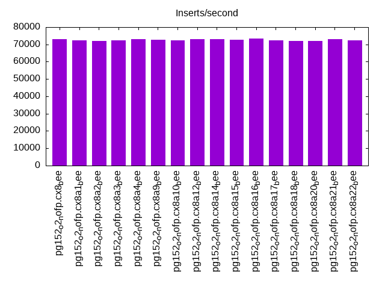
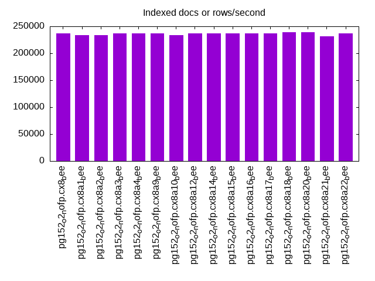
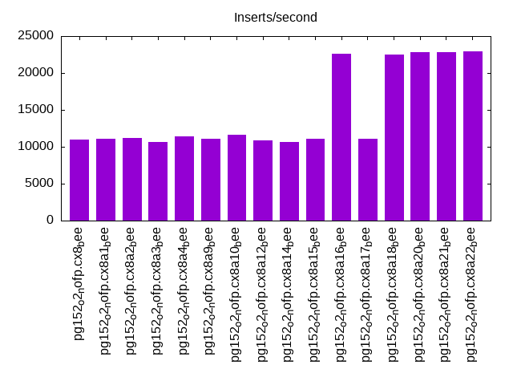
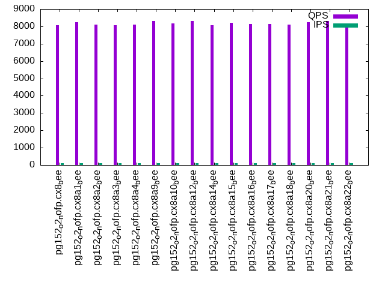
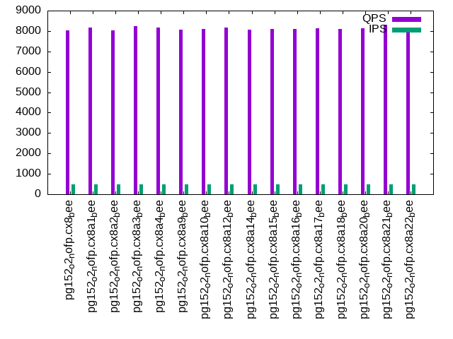
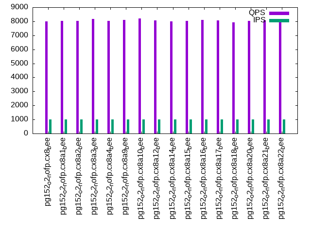

This is a report for the insert benchmark with 20M docs and 1 client(s). It is generated by scripts (bash, awk, sed) and Tufte might not be impressed. An overview of the insert benchmark is here and a short update is here. Below, by DBMS, I mean DBMS+version.config. An example is my8020.c10b40 where my means MySQL, 8020 is version 8.0.20 and c10b40 is the name for the configuration file.
The test server has 8 AMD cores, 16G RAM and an NVMe SSD. It is described here as the Beelink. The benchmark was run with 1 client and there were 1 or 3 connections per client (1 for queries or inserts without rate limits, 1+1 for rate limited inserts+deletes). It uses 1 table. It loads 20M rows per table without secondary indexes, creates secondary indexes, then inserts 50M rows per table with a delete per insert to avoid growing the table. It then does 3 read+write tests for 1800s each that do queries as fast as possible with 100, 500 and then 1000 inserts/second/client concurrent with the queries and 1000 deletes/second to avoid growing the table. The database is cached by Postgres. Clients and the DBMS share one server. The per-database configs are in the per-database subdirectories here.
The tested DBMS are:
The numbers are inserts/s for l.i0 and l.i1, indexed docs (or rows) /s for l.x and queries/s for q*.2. The values are the average rate over the entire test for inserts (IPS) and queries (QPS). The range of values for IPS and QPS is split into 3 parts: bottom 25%, middle 50%, top 25%. Values in the bottom 25% have a red background, values in the top 25% have a green background and values in the middle have no color. A gray background is used for values that can be ignored because the DBMS did not sustain the target insert rate. Red backgrounds are not used when the minimum value is within 80% of the max value.
| dbms | l.i0 | l.x | l.i1 | q100.1 | q500.1 | q1000.1 |
|---|---|---|---|---|---|---|
| pg152_o2_nofp.cx8_bee | 72993 | 236470 | 11030 | 8062 | 8032 | 7981 |
| pg152_o2_nofp.cx8a1_bee | 72464 | 233721 | 11062 | 8228 | 8162 | 8039 |
| pg152_o2_nofp.cx8a2_bee | 71942 | 233721 | 11206 | 8097 | 8022 | 8027 |
| pg152_o2_nofp.cx8a3_bee | 72464 | 236470 | 10616 | 8061 | 8223 | 8153 |
| pg152_o2_nofp.cx8a4_bee | 72993 | 236470 | 11436 | 8113 | 8169 | 8043 |
| pg152_o2_nofp.cx8a9_bee | 72727 | 236470 | 11035 | 8300 | 8064 | 8107 |
| pg152_o2_nofp.cx8a10_bee | 72202 | 233721 | 11669 | 8177 | 8102 | 8217 |
| pg152_o2_nofp.cx8a12_bee | 72993 | 236470 | 10900 | 8312 | 8177 | 8065 |
| pg152_o2_nofp.cx8a14_bee | 72993 | 236470 | 10693 | 8068 | 8073 | 7991 |
| pg152_o2_nofp.cx8a15_bee | 72727 | 236470 | 11091 | 8209 | 8113 | 8039 |
| pg152_o2_nofp.cx8a16_bee | 73260 | 236470 | 22635 | 8121 | 8098 | 8088 |
| pg152_o2_nofp.cx8a17_bee | 72202 | 236470 | 11104 | 8151 | 8141 | 8059 |
| pg152_o2_nofp.cx8a18_bee | 71942 | 239286 | 22512 | 8083 | 8093 | 7934 |
| pg152_o2_nofp.cx8a20_bee | 71942 | 239286 | 22800 | 8248 | 8151 | 8030 |
| pg152_o2_nofp.cx8a21_bee | 72993 | 231034 | 22810 | 8310 | 8319 | 8072 |
| pg152_o2_nofp.cx8a22_bee | 72464 | 236470 | 22904 | 8060 | 8092 | 8095 |
This table has relative throughput, throughput for the DBMS relative to the DBMS in the first line, using the absolute throughput from the previous table. Values less than 0.95 have a yellow background. Values greater than 1.05 have a blue background.
| dbms | l.i0 | l.x | l.i1 | q100.1 | q500.1 | q1000.1 |
|---|---|---|---|---|---|---|
| pg152_o2_nofp.cx8_bee | 1.00 | 1.00 | 1.00 | 1.00 | 1.00 | 1.00 |
| pg152_o2_nofp.cx8a1_bee | 0.99 | 0.99 | 1.00 | 1.02 | 1.02 | 1.01 |
| pg152_o2_nofp.cx8a2_bee | 0.99 | 0.99 | 1.02 | 1.00 | 1.00 | 1.01 |
| pg152_o2_nofp.cx8a3_bee | 0.99 | 1.00 | 0.96 | 1.00 | 1.02 | 1.02 |
| pg152_o2_nofp.cx8a4_bee | 1.00 | 1.00 | 1.04 | 1.01 | 1.02 | 1.01 |
| pg152_o2_nofp.cx8a9_bee | 1.00 | 1.00 | 1.00 | 1.03 | 1.00 | 1.02 |
| pg152_o2_nofp.cx8a10_bee | 0.99 | 0.99 | 1.06 | 1.01 | 1.01 | 1.03 |
| pg152_o2_nofp.cx8a12_bee | 1.00 | 1.00 | 0.99 | 1.03 | 1.02 | 1.01 |
| pg152_o2_nofp.cx8a14_bee | 1.00 | 1.00 | 0.97 | 1.00 | 1.01 | 1.00 |
| pg152_o2_nofp.cx8a15_bee | 1.00 | 1.00 | 1.01 | 1.02 | 1.01 | 1.01 |
| pg152_o2_nofp.cx8a16_bee | 1.00 | 1.00 | 2.05 | 1.01 | 1.01 | 1.01 |
| pg152_o2_nofp.cx8a17_bee | 0.99 | 1.00 | 1.01 | 1.01 | 1.01 | 1.01 |
| pg152_o2_nofp.cx8a18_bee | 0.99 | 1.01 | 2.04 | 1.00 | 1.01 | 0.99 |
| pg152_o2_nofp.cx8a20_bee | 0.99 | 1.01 | 2.07 | 1.02 | 1.01 | 1.01 |
| pg152_o2_nofp.cx8a21_bee | 1.00 | 0.98 | 2.07 | 1.03 | 1.04 | 1.01 |
| pg152_o2_nofp.cx8a22_bee | 0.99 | 1.00 | 2.08 | 1.00 | 1.01 | 1.01 |
This lists the average rate of inserts/s for the tests that do inserts concurrent with queries. For such tests the query rate is listed in the table above. The read+write tests are setup so that the insert rate should match the target rate every second. Cells that are not at least 95% of the target have a red background to indicate a failure to satisfy the target.
| dbms | q100.1 | q500.1 | q1000.1 |
|---|---|---|---|
| pg152_o2_nofp.cx8_bee | 100 | 499 | 998 |
| pg152_o2_nofp.cx8a1_bee | 100 | 499 | 998 |
| pg152_o2_nofp.cx8a2_bee | 100 | 499 | 998 |
| pg152_o2_nofp.cx8a3_bee | 100 | 499 | 998 |
| pg152_o2_nofp.cx8a4_bee | 100 | 499 | 998 |
| pg152_o2_nofp.cx8a9_bee | 100 | 499 | 998 |
| pg152_o2_nofp.cx8a10_bee | 100 | 499 | 998 |
| pg152_o2_nofp.cx8a12_bee | 100 | 499 | 998 |
| pg152_o2_nofp.cx8a14_bee | 100 | 499 | 998 |
| pg152_o2_nofp.cx8a15_bee | 100 | 499 | 998 |
| pg152_o2_nofp.cx8a16_bee | 100 | 499 | 998 |
| pg152_o2_nofp.cx8a17_bee | 100 | 499 | 998 |
| pg152_o2_nofp.cx8a18_bee | 100 | 499 | 998 |
| pg152_o2_nofp.cx8a20_bee | 100 | 499 | 998 |
| pg152_o2_nofp.cx8a21_bee | 100 | 499 | 998 |
| pg152_o2_nofp.cx8a22_bee | 100 | 499 | 998 |
| target | 100 | 500 | 1000 |
l.i0: load without secondary indexes. Graphs for performance per 1-second interval are here.
Average throughput:
Insert response time histogram: each cell has the percentage of responses that take <= the time in the header and max is the max response time in seconds. For the max column values in the top 25% of the range have a red background and in the bottom 25% of the range have a green background. The red background is not used when the min value is within 80% of the max value.
| dbms | 256us | 1ms | 4ms | 16ms | 64ms | 256ms | 1s | 4s | 16s | gt | max |
|---|---|---|---|---|---|---|---|---|---|---|---|
| pg152_o2_nofp.cx8_bee | 100.000 | 0.003 | |||||||||
| pg152_o2_nofp.cx8a1_bee | 100.000 | 0.003 | |||||||||
| pg152_o2_nofp.cx8a2_bee | 100.000 | 0.003 | |||||||||
| pg152_o2_nofp.cx8a3_bee | 100.000 | 0.003 | |||||||||
| pg152_o2_nofp.cx8a4_bee | 100.000 | 0.003 | |||||||||
| pg152_o2_nofp.cx8a9_bee | 100.000 | 0.003 | |||||||||
| pg152_o2_nofp.cx8a10_bee | 100.000 | 0.004 | |||||||||
| pg152_o2_nofp.cx8a12_bee | 100.000 | 0.003 | |||||||||
| pg152_o2_nofp.cx8a14_bee | 100.000 | 0.004 | |||||||||
| pg152_o2_nofp.cx8a15_bee | 100.000 | 0.003 | |||||||||
| pg152_o2_nofp.cx8a16_bee | 100.000 | 0.003 | |||||||||
| pg152_o2_nofp.cx8a17_bee | 100.000 | 0.003 | |||||||||
| pg152_o2_nofp.cx8a18_bee | 100.000 | 0.003 | |||||||||
| pg152_o2_nofp.cx8a20_bee | 100.000 | 0.003 | |||||||||
| pg152_o2_nofp.cx8a21_bee | 100.000 | 0.003 | |||||||||
| pg152_o2_nofp.cx8a22_bee | 100.000 | 0.003 |
Performance metrics for the DBMS listed above. Some are normalized by throughput, others are not. Legend for results is here.
ips qps rps rmbps wps wmbps rpq rkbpq wpi wkbpi csps cpups cspq cpupq dbgb1 dbgb2 rss maxop p50 p99 tag 72993 0 0 0.0 83.8 30.9 0.000 0.000 0.001 0.433 8959 23.2 0.123 25 1.9 5.2 0.0 0.003 73117 70213 20m.pg152_o2_nofp.cx8_bee 72464 0 0 0.0 84.2 30.5 0.000 0.000 0.001 0.431 8897 23.3 0.123 26 1.9 5.2 0.0 0.003 72517 70578 20m.pg152_o2_nofp.cx8a1_bee 71942 0 0 0.0 84.1 30.4 0.000 0.000 0.001 0.432 8783 23.1 0.122 26 1.9 5.2 0.0 0.003 72218 69515 20m.pg152_o2_nofp.cx8a2_bee 72464 0 0 0.0 84.4 30.5 0.000 0.000 0.001 0.431 8938 23.4 0.123 26 1.9 5.2 0.0 0.003 72717 70016 20m.pg152_o2_nofp.cx8a3_bee 72993 0 0 0.0 83.7 30.8 0.000 0.000 0.001 0.432 8989 23.4 0.123 26 1.9 5.2 0.0 0.003 73117 70215 20m.pg152_o2_nofp.cx8a4_bee 72727 0 0 0.0 84.4 30.6 0.000 0.000 0.001 0.431 8944 23.0 0.123 25 1.9 5.2 0.0 0.003 72917 70516 20m.pg152_o2_nofp.cx8a9_bee 72202 0 0 0.0 84.2 30.5 0.000 0.000 0.001 0.433 8919 23.1 0.124 26 1.9 5.2 0.0 0.004 72616 69716 20m.pg152_o2_nofp.cx8a10_bee 72993 0 0 0.0 84.1 30.9 0.000 0.000 0.001 0.433 8994 23.4 0.123 26 1.9 5.2 0.0 0.003 73416 70316 20m.pg152_o2_nofp.cx8a12_bee 72993 0 0 0.0 84.2 30.9 0.000 0.000 0.001 0.433 8986 23.1 0.123 25 1.9 5.2 0.0 0.004 73119 70215 20m.pg152_o2_nofp.cx8a14_bee 72727 0 0 0.0 84.3 30.8 0.000 0.000 0.001 0.434 8974 23.2 0.123 26 1.9 5.2 0.0 0.003 73019 70317 20m.pg152_o2_nofp.cx8a15_bee 73260 0 0 0.0 84.1 30.9 0.000 0.000 0.001 0.431 9003 23.1 0.123 25 1.9 5.2 0.0 0.003 73319 70515 20m.pg152_o2_nofp.cx8a16_bee 72202 0 0 0.0 83.0 30.5 0.000 0.000 0.001 0.433 8906 23.2 0.123 26 1.9 5.2 0.0 0.003 72617 69916 20m.pg152_o2_nofp.cx8a17_bee 71942 0 0 0.0 83.1 30.5 0.000 0.000 0.001 0.434 8894 23.1 0.124 26 1.9 5.2 0.0 0.003 72320 69016 20m.pg152_o2_nofp.cx8a18_bee 71942 0 0 0.0 83.0 30.4 0.000 0.000 0.001 0.433 8883 23.1 0.123 26 1.9 5.2 0.0 0.003 72419 68917 20m.pg152_o2_nofp.cx8a20_bee 72993 0 0 0.0 84.0 30.9 0.000 0.000 0.001 0.434 8918 23.2 0.122 25 1.9 5.2 0.0 0.003 73017 69616 20m.pg152_o2_nofp.cx8a21_bee 72464 0 0 0.0 83.2 30.5 0.000 0.000 0.001 0.431 8891 23.1 0.123 26 1.9 5.2 0.0 0.003 72619 70164 20m.pg152_o2_nofp.cx8a22_bee
l.x: create secondary indexes.
Average throughput:
Performance metrics for the DBMS listed above. Some are normalized by throughput, others are not. Legend for results is here.
ips qps rps rmbps wps wmbps rpq rkbpq wpi wkbpi csps cpups cspq cpupq dbgb1 dbgb2 rss maxop p50 p99 tag 236470 0 0 0.0 140.4 62.5 0.000 0.000 0.001 0.271 784 12.0 0.003 4 3.7 8.6 0.0 0.003 NA NA 20m.pg152_o2_nofp.cx8_bee 233721 0 0 0.0 93.9 44.1 0.000 0.000 0.000 0.193 754 12.2 0.003 4 3.7 8.0 0.0 0.003 NA NA 20m.pg152_o2_nofp.cx8a1_bee 233721 0 0 0.0 127.0 59.9 0.000 0.000 0.001 0.263 709 12.0 0.003 4 3.7 8.6 0.0 0.003 NA NA 20m.pg152_o2_nofp.cx8a2_bee 236470 0 0 0.0 126.6 59.5 0.000 0.000 0.001 0.258 684 12.0 0.003 4 3.7 8.6 0.0 0.003 NA NA 20m.pg152_o2_nofp.cx8a3_bee 236470 0 0 0.0 134.4 63.5 0.000 0.000 0.001 0.275 830 11.9 0.004 4 3.7 8.6 0.0 0.003 NA NA 20m.pg152_o2_nofp.cx8a4_bee 236470 0 0 0.0 123.3 57.7 0.000 0.000 0.001 0.250 777 12.1 0.003 4 3.7 8.6 0.0 0.003 NA NA 20m.pg152_o2_nofp.cx8a9_bee 233721 0 0 0.0 143.3 67.5 0.000 0.000 0.001 0.296 711 11.8 0.003 4 3.7 8.6 0.0 0.003 NA NA 20m.pg152_o2_nofp.cx8a10_bee 236470 0 0 0.0 97.1 45.7 0.000 0.000 0.000 0.198 734 12.3 0.003 4 3.7 8.6 0.0 0.003 NA NA 20m.pg152_o2_nofp.cx8a12_bee 236470 0 0 0.0 128.1 60.3 0.000 0.000 0.001 0.261 755 11.9 0.003 4 3.7 8.6 0.0 0.003 NA NA 20m.pg152_o2_nofp.cx8a14_bee 236470 0 0 0.0 132.3 62.2 0.000 0.000 0.001 0.269 725 12.0 0.003 4 3.7 8.6 0.0 0.003 NA NA 20m.pg152_o2_nofp.cx8a15_bee 236470 0 0 0.0 138.2 65.2 0.000 0.000 0.001 0.282 991 12.1 0.004 4 3.7 8.6 0.0 0.003 NA NA 20m.pg152_o2_nofp.cx8a16_bee 236470 0 0 0.0 145.7 68.7 0.000 0.000 0.001 0.298 754 12.2 0.003 4 3.7 8.6 0.0 0.003 NA NA 20m.pg152_o2_nofp.cx8a17_bee 239286 0 0 0.0 75.6 35.5 0.000 0.000 0.000 0.152 665 12.8 0.003 4 3.7 8.0 0.0 0.003 NA NA 20m.pg152_o2_nofp.cx8a18_bee 239286 0 0 0.0 101.8 47.8 0.000 0.000 0.000 0.205 718 12.6 0.003 4 3.7 8.6 0.0 0.003 NA NA 20m.pg152_o2_nofp.cx8a20_bee 231034 0 0 0.0 80.3 37.5 0.000 0.000 0.000 0.166 729 12.6 0.003 4 3.7 8.0 0.0 0.003 NA NA 20m.pg152_o2_nofp.cx8a21_bee 236470 0 0 0.0 122.5 57.6 0.000 0.000 0.001 0.249 701 12.5 0.003 4 3.7 8.6 0.0 0.003 NA NA 20m.pg152_o2_nofp.cx8a22_bee
l.i1: continue load after secondary indexes created. Graphs for performance per 1-second interval are here.
Average throughput:
Insert response time histogram: each cell has the percentage of responses that take <= the time in the header and max is the max response time in seconds. For the max column values in the top 25% of the range have a red background and in the bottom 25% of the range have a green background. The red background is not used when the min value is within 80% of the max value.
| dbms | 256us | 1ms | 4ms | 16ms | 64ms | 256ms | 1s | 4s | 16s | gt | max |
|---|---|---|---|---|---|---|---|---|---|---|---|
| pg152_o2_nofp.cx8_bee | 99.996 | 0.004 | 0.013 | ||||||||
| pg152_o2_nofp.cx8a1_bee | 99.975 | 0.025 | 0.010 | ||||||||
| pg152_o2_nofp.cx8a2_bee | 99.997 | 0.002 | nonzero | 0.021 | |||||||
| pg152_o2_nofp.cx8a3_bee | 99.998 | 0.002 | nonzero | 0.023 | |||||||
| pg152_o2_nofp.cx8a4_bee | 99.997 | 0.002 | 0.001 | 0.030 | |||||||
| pg152_o2_nofp.cx8a9_bee | 99.999 | 0.002 | 0.007 | ||||||||
| pg152_o2_nofp.cx8a10_bee | 99.995 | 0.004 | 0.001 | 0.048 | |||||||
| pg152_o2_nofp.cx8a12_bee | 99.998 | 0.002 | nonzero | 0.020 | |||||||
| pg152_o2_nofp.cx8a14_bee | 99.996 | 0.003 | nonzero | 0.022 | |||||||
| pg152_o2_nofp.cx8a15_bee | 99.991 | 0.006 | 0.003 | 0.054 | |||||||
| pg152_o2_nofp.cx8a16_bee | 99.997 | 0.003 | nonzero | 0.035 | |||||||
| pg152_o2_nofp.cx8a17_bee | 99.999 | 0.001 | nonzero | 0.026 | |||||||
| pg152_o2_nofp.cx8a18_bee | 99.989 | 0.011 | nonzero | 0.026 | |||||||
| pg152_o2_nofp.cx8a20_bee | 99.998 | 0.002 | nonzero | 0.024 | |||||||
| pg152_o2_nofp.cx8a21_bee | 99.984 | 0.015 | nonzero | 0.017 | |||||||
| pg152_o2_nofp.cx8a22_bee | 99.993 | 0.005 | 0.002 | 0.039 |
Delete response time histogram: each cell has the percentage of responses that take <= the time in the header and max is the max response time in seconds. For the max column values in the top 25% of the range have a red background and in the bottom 25% of the range have a green background. The red background is not used when the min value is within 80% of the max value.
| dbms | 256us | 1ms | 4ms | 16ms | 64ms | 256ms | 1s | 4s | 16s | gt | max |
|---|---|---|---|---|---|---|---|---|---|---|---|
| pg152_o2_nofp.cx8_bee | 0.101 | 84.262 | 0.349 | 5.252 | 10.036 | nonzero | 0.074 | ||||
| pg152_o2_nofp.cx8a1_bee | 0.083 | 84.038 | 1.194 | 4.821 | 9.863 | 0.050 | |||||
| pg152_o2_nofp.cx8a2_bee | 0.083 | 84.433 | 1.000 | 4.976 | 9.508 | nonzero | 0.084 | ||||
| pg152_o2_nofp.cx8a3_bee | 0.083 | 83.870 | 1.042 | 4.666 | 10.339 | 0.048 | |||||
| pg152_o2_nofp.cx8a4_bee | 0.095 | 84.091 | 1.366 | 4.941 | 9.507 | 0.049 | |||||
| pg152_o2_nofp.cx8a9_bee | 0.080 | 83.885 | 1.675 | 4.744 | 9.616 | 0.047 | |||||
| pg152_o2_nofp.cx8a10_bee | 0.095 | 84.472 | 1.408 | 5.212 | 8.813 | 0.049 | |||||
| pg152_o2_nofp.cx8a12_bee | 0.099 | 83.288 | 1.892 | 5.322 | 9.398 | 0.049 | |||||
| pg152_o2_nofp.cx8a14_bee | 0.091 | 83.778 | 0.714 | 5.276 | 10.140 | nonzero | 0.081 | ||||
| pg152_o2_nofp.cx8a15_bee | 0.080 | 84.526 | 0.534 | 4.994 | 9.867 | 0.046 | |||||
| pg152_o2_nofp.cx8a16_bee | 0.138 | 82.953 | 2.873 | 14.036 | nonzero | 0.036 | |||||
| pg152_o2_nofp.cx8a17_bee | 0.096 | 84.409 | 1.378 | 4.732 | 9.385 | 0.049 | |||||
| pg152_o2_nofp.cx8a18_bee | 0.106 | 82.910 | 3.061 | 13.923 | nonzero | 0.024 | |||||
| pg152_o2_nofp.cx8a20_bee | 0.122 | 83.132 | 4.189 | 12.557 | nonzero | 0.039 | |||||
| pg152_o2_nofp.cx8a21_bee | 0.124 | 83.096 | 3.357 | 13.423 | 0.015 | ||||||
| pg152_o2_nofp.cx8a22_bee | 0.137 | 83.213 | 3.538 | 13.110 | 0.001 | 0.044 |
Performance metrics for the DBMS listed above. Some are normalized by throughput, others are not. Legend for results is here.
ips qps rps rmbps wps wmbps rpq rkbpq wpi wkbpi csps cpups cspq cpupq dbgb1 dbgb2 rss maxop p50 p99 tag 11030 0 0 0.0 52.1 14.4 0.000 0.000 0.005 1.334 5404 17.2 0.490 125 6.1 31.0 0.0 0.013 2797 1199 20m.pg152_o2_nofp.cx8_bee 11062 0 0 0.0 49.9 13.5 0.000 0.000 0.005 1.254 5423 17.2 0.490 124 6.1 29.6 0.0 0.010 2697 1199 20m.pg152_o2_nofp.cx8a1_bee 11206 0 0 0.0 52.5 14.6 0.000 0.000 0.005 1.332 5482 17.3 0.489 124 6.1 31.1 0.0 0.021 2697 1249 20m.pg152_o2_nofp.cx8a2_bee 10616 0 0 0.0 43.8 11.6 0.000 0.000 0.004 1.114 5198 16.9 0.490 127 6.1 26.8 0.0 0.023 2547 1149 20m.pg152_o2_nofp.cx8a3_bee 11436 0 0 0.0 53.6 15.0 0.000 0.000 0.005 1.344 5604 17.3 0.490 121 6.1 32.1 0.0 0.030 2797 1249 20m.pg152_o2_nofp.cx8a4_bee 11035 0 0 0.0 81.3 16.4 0.000 0.000 0.007 1.521 5384 17.3 0.488 125 6.1 21.6 0.0 0.007 2697 1199 20m.pg152_o2_nofp.cx8a9_bee 11669 0 0 0.0 53.9 15.2 0.000 0.000 0.005 1.331 5711 17.4 0.489 119 6.1 31.9 0.0 0.048 2747 1249 20m.pg152_o2_nofp.cx8a10_bee 10900 0 0 0.0 51.3 14.2 0.000 0.000 0.005 1.331 5352 17.1 0.491 126 6.1 31.0 0.0 0.020 2597 1199 20m.pg152_o2_nofp.cx8a12_bee 10693 0 0 0.0 50.8 13.9 0.000 0.000 0.005 1.329 5248 17.0 0.491 127 6.1 30.5 0.0 0.022 2597 1249 20m.pg152_o2_nofp.cx8a14_bee 11091 0 0 0.0 110.2 20.4 0.000 0.000 0.010 1.882 5406 17.3 0.487 125 6.1 16.1 3.8 0.054 2697 1249 20m.pg152_o2_nofp.cx8a15_bee 22635 0 0 0.0 84.6 26.3 0.000 0.000 0.004 1.192 10975 23.1 0.485 82 4.8 36.1 0.0 0.035 29268 8195 20m.pg152_o2_nofp.cx8a16_bee 11104 0 0 0.0 51.8 14.4 0.000 0.000 0.005 1.324 5442 17.1 0.490 123 6.1 30.9 0.0 0.026 2597 1199 20m.pg152_o2_nofp.cx8a17_bee 22512 0 0 0.0 72.5 21.6 0.000 0.000 0.003 0.982 10869 23.0 0.483 82 5.0 42.9 0.2 0.026 29168 8091 20m.pg152_o2_nofp.cx8a18_bee 22800 0 0 0.0 84.8 26.5 0.000 0.000 0.004 1.192 11034 23.2 0.484 81 4.8 36.1 0.0 0.024 29168 4747 20m.pg152_o2_nofp.cx8a20_bee 22810 0 0 0.0 80.4 25.1 0.000 0.000 0.004 1.125 11037 23.1 0.484 81 4.8 34.1 0.0 0.017 29318 8547 20m.pg152_o2_nofp.cx8a21_bee 22904 0 0 0.0 85.2 26.7 0.000 0.000 0.004 1.195 11089 23.2 0.484 81 4.8 36.2 0.0 0.039 29267 8541 20m.pg152_o2_nofp.cx8a22_bee
q100.1: range queries with 100 insert/s per client. Graphs for performance per 1-second interval are here.
Average throughput:
Query response time histogram: each cell has the percentage of responses that take <= the time in the header and max is the max response time in seconds. For max values in the top 25% of the range have a red background and in the bottom 25% of the range have a green background. The red background is not used when the min value is within 80% of the max value.
| dbms | 256us | 1ms | 4ms | 16ms | 64ms | 256ms | 1s | 4s | 16s | gt | max |
|---|---|---|---|---|---|---|---|---|---|---|---|
| pg152_o2_nofp.cx8_bee | 99.949 | 0.050 | nonzero | 0.003 | |||||||
| pg152_o2_nofp.cx8a1_bee | 99.938 | 0.062 | nonzero | nonzero | 0.004 | ||||||
| pg152_o2_nofp.cx8a2_bee | 99.941 | 0.059 | 0.001 | nonzero | 0.006 | ||||||
| pg152_o2_nofp.cx8a3_bee | 99.947 | 0.053 | nonzero | 0.004 | |||||||
| pg152_o2_nofp.cx8a4_bee | 99.926 | 0.074 | nonzero | 0.004 | |||||||
| pg152_o2_nofp.cx8a9_bee | 99.950 | 0.050 | nonzero | 0.003 | |||||||
| pg152_o2_nofp.cx8a10_bee | 99.962 | 0.038 | nonzero | 0.003 | |||||||
| pg152_o2_nofp.cx8a12_bee | 99.960 | 0.040 | nonzero | nonzero | 0.004 | ||||||
| pg152_o2_nofp.cx8a14_bee | 99.946 | 0.054 | nonzero | 0.003 | |||||||
| pg152_o2_nofp.cx8a15_bee | 99.949 | 0.051 | nonzero | 0.003 | |||||||
| pg152_o2_nofp.cx8a16_bee | 99.947 | 0.053 | nonzero | 0.003 | |||||||
| pg152_o2_nofp.cx8a17_bee | 99.946 | 0.053 | nonzero | 0.003 | |||||||
| pg152_o2_nofp.cx8a18_bee | 99.935 | 0.065 | nonzero | nonzero | 0.004 | ||||||
| pg152_o2_nofp.cx8a20_bee | 99.942 | 0.057 | nonzero | 0.003 | |||||||
| pg152_o2_nofp.cx8a21_bee | 99.938 | 0.062 | 0.001 | nonzero | 0.004 | ||||||
| pg152_o2_nofp.cx8a22_bee | 99.954 | 0.045 | nonzero | 0.003 |
Insert response time histogram: each cell has the percentage of responses that take <= the time in the header and max is the max response time in seconds. For max values in the top 25% of the range have a red background and in the bottom 25% of the range have a green background. The red background is not used when the min value is within 80% of the max value.
| dbms | 256us | 1ms | 4ms | 16ms | 64ms | 256ms | 1s | 4s | 16s | gt | max |
|---|---|---|---|---|---|---|---|---|---|---|---|
| pg152_o2_nofp.cx8_bee | 99.667 | 0.333 | 0.007 | ||||||||
| pg152_o2_nofp.cx8a1_bee | 69.278 | 30.722 | 0.006 | ||||||||
| pg152_o2_nofp.cx8a2_bee | 99.778 | 0.222 | 0.008 | ||||||||
| pg152_o2_nofp.cx8a3_bee | 99.889 | 0.111 | 0.006 | ||||||||
| pg152_o2_nofp.cx8a4_bee | 99.917 | 0.083 | 0.005 | ||||||||
| pg152_o2_nofp.cx8a9_bee | 99.889 | 0.111 | 0.006 | ||||||||
| pg152_o2_nofp.cx8a10_bee | 99.944 | 0.056 | 0.006 | ||||||||
| pg152_o2_nofp.cx8a12_bee | 99.889 | 0.111 | 0.006 | ||||||||
| pg152_o2_nofp.cx8a14_bee | 99.861 | 0.139 | 0.007 | ||||||||
| pg152_o2_nofp.cx8a15_bee | 99.889 | 0.111 | 0.006 | ||||||||
| pg152_o2_nofp.cx8a16_bee | 99.917 | 0.083 | 0.005 | ||||||||
| pg152_o2_nofp.cx8a17_bee | 99.806 | 0.194 | 0.005 | ||||||||
| pg152_o2_nofp.cx8a18_bee | 68.944 | 31.056 | 0.006 | ||||||||
| pg152_o2_nofp.cx8a20_bee | 99.944 | 0.056 | 0.006 | ||||||||
| pg152_o2_nofp.cx8a21_bee | 65.528 | 34.472 | 0.007 | ||||||||
| pg152_o2_nofp.cx8a22_bee | 99.944 | 0.056 | 0.006 |
Delete response time histogram: each cell has the percentage of responses that take <= the time in the header and max is the max response time in seconds. For max values in the top 25% of the range have a red background and in the bottom 25% of the range have a green background. The red background is not used when the min value is within 80% of the max value.
| dbms | 256us | 1ms | 4ms | 16ms | 64ms | 256ms | 1s | 4s | 16s | gt | max |
|---|---|---|---|---|---|---|---|---|---|---|---|
| pg152_o2_nofp.cx8_bee | 23.889 | 76.028 | 0.083 | 0.005 | |||||||
| pg152_o2_nofp.cx8a1_bee | 0.833 | 97.639 | 1.472 | 0.056 | 0.005 | ||||||
| pg152_o2_nofp.cx8a2_bee | 0.056 | 23.167 | 76.667 | 0.111 | 0.005 | ||||||
| pg152_o2_nofp.cx8a3_bee | 0.417 | 91.806 | 7.778 | 0.001 | |||||||
| pg152_o2_nofp.cx8a4_bee | 0.917 | 99.056 | 0.028 | 0.002 | |||||||
| pg152_o2_nofp.cx8a9_bee | 0.389 | 99.583 | 0.028 | 0.001 | |||||||
| pg152_o2_nofp.cx8a10_bee | 0.556 | 99.361 | 0.083 | 0.003 | |||||||
| pg152_o2_nofp.cx8a12_bee | 0.556 | 99.389 | 0.056 | 0.003 | |||||||
| pg152_o2_nofp.cx8a14_bee | 0.667 | 99.278 | 0.056 | 0.002 | |||||||
| pg152_o2_nofp.cx8a15_bee | 26.167 | 73.778 | 0.056 | 0.005 | |||||||
| pg152_o2_nofp.cx8a16_bee | 0.556 | 94.722 | 4.722 | 0.003 | |||||||
| pg152_o2_nofp.cx8a17_bee | 0.083 | 39.972 | 59.694 | 0.250 | 0.007 | ||||||
| pg152_o2_nofp.cx8a18_bee | 0.556 | 99.417 | 0.028 | 0.002 | |||||||
| pg152_o2_nofp.cx8a20_bee | 0.278 | 49.889 | 0.028 | 49.806 | 0.010 | ||||||
| pg152_o2_nofp.cx8a21_bee | 1.306 | 98.694 | 0.008 | ||||||||
| pg152_o2_nofp.cx8a22_bee | 0.250 | 56.389 | 43.361 | 0.002 |
Performance metrics for the DBMS listed above. Some are normalized by throughput, others are not. Legend for results is here.
ips qps rps rmbps wps wmbps rpq rkbpq wpi wkbpi csps cpups cspq cpupq dbgb1 dbgb2 rss maxop p50 p99 tag 100 8062 0 0.0 24.9 3.4 0.000 0.000 0.249 35.072 31007 13.1 3.846 130 6.1 31.0 0.0 0.003 7765 7623 20m.pg152_o2_nofp.cx8_bee 100 8228 0 0.0 24.5 3.2 0.000 0.000 0.245 32.365 31622 13.2 3.843 128 6.1 29.6 0.0 0.004 7846 7717 20m.pg152_o2_nofp.cx8a1_bee 100 8097 0 0.0 24.4 3.4 0.000 0.000 0.244 34.980 31142 13.2 3.846 130 6.1 31.1 0.0 0.006 7781 7652 20m.pg152_o2_nofp.cx8a2_bee 100 8061 0 0.0 26.1 2.9 0.000 0.000 0.262 30.265 30955 13.1 3.840 130 6.1 26.8 0.0 0.004 7797 7655 20m.pg152_o2_nofp.cx8a3_bee 100 8113 0 0.0 28.2 3.3 0.000 0.000 0.283 33.633 31193 13.2 3.845 130 6.1 32.1 0.0 0.004 7829 7718 20m.pg152_o2_nofp.cx8a4_bee 100 8300 0 0.0 111.9 4.0 0.000 0.000 1.121 40.560 31919 13.4 3.846 129 6.1 21.6 0.0 0.003 7847 7733 20m.pg152_o2_nofp.cx8a9_bee 100 8177 0 0.0 21.8 3.2 0.000 0.000 0.218 32.810 31446 13.3 3.846 130 6.1 31.9 0.0 0.003 7799 7718 20m.pg152_o2_nofp.cx8a10_bee 100 8312 0 0.0 24.0 3.4 0.000 0.000 0.241 35.094 31965 13.0 3.846 125 6.1 31.0 0.0 0.004 7991 7885 20m.pg152_o2_nofp.cx8a12_bee 100 8068 0 0.0 24.7 3.6 0.000 0.000 0.248 36.715 31051 13.3 3.849 132 6.1 30.4 0.0 0.003 7719 7592 20m.pg152_o2_nofp.cx8a14_bee 100 8209 0 0.0 24.5 1.4 0.000 0.000 0.245 14.651 31546 13.2 3.843 129 6.1 16.1 0.0 0.003 7847 7703 20m.pg152_o2_nofp.cx8a15_bee 100 8121 0 0.0 17.7 2.5 0.000 0.000 0.178 25.446 31244 13.4 3.848 132 4.8 36.2 0.0 0.003 7767 7653 20m.pg152_o2_nofp.cx8a16_bee 100 8151 0 0.0 24.4 3.4 0.000 0.000 0.245 34.888 31336 13.2 3.844 130 6.1 30.9 0.0 0.003 7847 7719 20m.pg152_o2_nofp.cx8a17_bee 100 8083 0 0.0 20.5 2.8 0.000 0.000 0.206 29.148 31076 13.3 3.845 132 5.0 42.9 0.0 0.004 7639 7526 20m.pg152_o2_nofp.cx8a18_bee 100 8248 0 0.0 17.7 2.5 0.000 0.000 0.177 25.466 31714 13.2 3.845 128 4.8 36.2 0.0 0.003 7751 7606 20m.pg152_o2_nofp.cx8a20_bee 100 8310 0 0.0 17.3 2.4 0.000 0.000 0.173 24.123 31954 13.3 3.845 128 4.8 34.2 0.0 0.004 7879 7752 20m.pg152_o2_nofp.cx8a21_bee 100 8060 0 0.0 17.6 2.4 0.000 0.000 0.176 25.136 31005 12.9 3.847 128 4.8 36.3 0.0 0.003 7735 7623 20m.pg152_o2_nofp.cx8a22_bee
q500.1: range queries with 500 insert/s per client. Graphs for performance per 1-second interval are here.
Average throughput:
Query response time histogram: each cell has the percentage of responses that take <= the time in the header and max is the max response time in seconds. For max values in the top 25% of the range have a red background and in the bottom 25% of the range have a green background. The red background is not used when the min value is within 80% of the max value.
| dbms | 256us | 1ms | 4ms | 16ms | 64ms | 256ms | 1s | 4s | 16s | gt | max |
|---|---|---|---|---|---|---|---|---|---|---|---|
| pg152_o2_nofp.cx8_bee | 99.949 | 0.051 | nonzero | nonzero | 0.004 | ||||||
| pg152_o2_nofp.cx8a1_bee | 99.956 | 0.044 | nonzero | 0.003 | |||||||
| pg152_o2_nofp.cx8a2_bee | 99.949 | 0.051 | nonzero | nonzero | 0.004 | ||||||
| pg152_o2_nofp.cx8a3_bee | 99.953 | 0.047 | nonzero | nonzero | 0.004 | ||||||
| pg152_o2_nofp.cx8a4_bee | 99.946 | 0.054 | nonzero | nonzero | 0.005 | ||||||
| pg152_o2_nofp.cx8a9_bee | 99.943 | 0.057 | nonzero | 0.003 | |||||||
| pg152_o2_nofp.cx8a10_bee | 99.946 | 0.053 | nonzero | 0.003 | |||||||
| pg152_o2_nofp.cx8a12_bee | 99.956 | 0.044 | nonzero | 0.003 | |||||||
| pg152_o2_nofp.cx8a14_bee | 99.944 | 0.056 | nonzero | 0.003 | |||||||
| pg152_o2_nofp.cx8a15_bee | 99.943 | 0.057 | nonzero | nonzero | 0.006 | ||||||
| pg152_o2_nofp.cx8a16_bee | 99.954 | 0.046 | nonzero | 0.003 | |||||||
| pg152_o2_nofp.cx8a17_bee | 99.941 | 0.059 | nonzero | nonzero | 0.004 | ||||||
| pg152_o2_nofp.cx8a18_bee | 99.935 | 0.065 | nonzero | 0.004 | |||||||
| pg152_o2_nofp.cx8a20_bee | 99.955 | 0.045 | nonzero | 0.002 | |||||||
| pg152_o2_nofp.cx8a21_bee | 99.948 | 0.052 | nonzero | 0.003 | |||||||
| pg152_o2_nofp.cx8a22_bee | 99.953 | 0.047 | nonzero | 0.003 |
Insert response time histogram: each cell has the percentage of responses that take <= the time in the header and max is the max response time in seconds. For max values in the top 25% of the range have a red background and in the bottom 25% of the range have a green background. The red background is not used when the min value is within 80% of the max value.
| dbms | 256us | 1ms | 4ms | 16ms | 64ms | 256ms | 1s | 4s | 16s | gt | max |
|---|---|---|---|---|---|---|---|---|---|---|---|
| pg152_o2_nofp.cx8_bee | 99.961 | 0.039 | 0.005 | ||||||||
| pg152_o2_nofp.cx8a1_bee | 93.594 | 6.406 | 0.006 | ||||||||
| pg152_o2_nofp.cx8a2_bee | 99.978 | 0.022 | 0.006 | ||||||||
| pg152_o2_nofp.cx8a3_bee | 99.972 | 0.028 | 0.008 | ||||||||
| pg152_o2_nofp.cx8a4_bee | 99.917 | 0.083 | 0.007 | ||||||||
| pg152_o2_nofp.cx8a9_bee | 99.922 | 0.078 | 0.006 | ||||||||
| pg152_o2_nofp.cx8a10_bee | 99.928 | 0.072 | 0.007 | ||||||||
| pg152_o2_nofp.cx8a12_bee | 99.961 | 0.039 | 0.009 | ||||||||
| pg152_o2_nofp.cx8a14_bee | 99.967 | 0.033 | 0.006 | ||||||||
| pg152_o2_nofp.cx8a15_bee | 99.944 | 0.056 | 0.008 | ||||||||
| pg152_o2_nofp.cx8a16_bee | 99.944 | 0.050 | 0.006 | 0.040 | |||||||
| pg152_o2_nofp.cx8a17_bee | 99.972 | 0.028 | 0.006 | ||||||||
| pg152_o2_nofp.cx8a18_bee | 92.911 | 7.089 | 0.008 | ||||||||
| pg152_o2_nofp.cx8a20_bee | 99.978 | 0.022 | 0.010 | ||||||||
| pg152_o2_nofp.cx8a21_bee | 93.100 | 6.900 | 0.007 | ||||||||
| pg152_o2_nofp.cx8a22_bee | 99.967 | 0.028 | 0.006 | 0.021 |
Delete response time histogram: each cell has the percentage of responses that take <= the time in the header and max is the max response time in seconds. For max values in the top 25% of the range have a red background and in the bottom 25% of the range have a green background. The red background is not used when the min value is within 80% of the max value.
| dbms | 256us | 1ms | 4ms | 16ms | 64ms | 256ms | 1s | 4s | 16s | gt | max |
|---|---|---|---|---|---|---|---|---|---|---|---|
| pg152_o2_nofp.cx8_bee | 4.911 | 86.583 | 0.994 | 7.500 | 0.011 | 0.017 | |||||
| pg152_o2_nofp.cx8a1_bee | 3.228 | 76.100 | 0.072 | 20.600 | 0.015 | ||||||
| pg152_o2_nofp.cx8a2_bee | 5.367 | 83.356 | 3.667 | 7.611 | 0.015 | ||||||
| pg152_o2_nofp.cx8a3_bee | 3.450 | 74.311 | 0.117 | 22.122 | 0.015 | ||||||
| pg152_o2_nofp.cx8a4_bee | 3.806 | 73.756 | 0.089 | 22.350 | 0.011 | ||||||
| pg152_o2_nofp.cx8a9_bee | 3.067 | 75.406 | 0.089 | 21.439 | 0.010 | ||||||
| pg152_o2_nofp.cx8a10_bee | 4.067 | 71.067 | 0.089 | 24.778 | 0.013 | ||||||
| pg152_o2_nofp.cx8a12_bee | 2.967 | 76.006 | 0.133 | 20.894 | 0.011 | ||||||
| pg152_o2_nofp.cx8a14_bee | 3.883 | 75.400 | 0.122 | 20.594 | 0.010 | ||||||
| pg152_o2_nofp.cx8a15_bee | 4.667 | 87.689 | 0.094 | 7.544 | 0.006 | 0.016 | |||||
| pg152_o2_nofp.cx8a16_bee | 3.556 | 76.789 | 0.211 | 19.433 | 0.011 | 0.022 | |||||
| pg152_o2_nofp.cx8a17_bee | 7.133 | 80.278 | 8.672 | 3.917 | 0.015 | ||||||
| pg152_o2_nofp.cx8a18_bee | 3.883 | 74.961 | 5.494 | 15.661 | 0.010 | ||||||
| pg152_o2_nofp.cx8a20_bee | 6.156 | 71.833 | 0.122 | 21.889 | 0.014 | ||||||
| pg152_o2_nofp.cx8a21_bee | 4.706 | 83.267 | 0.089 | 11.939 | 0.016 | ||||||
| pg152_o2_nofp.cx8a22_bee | 3.789 | 78.983 | 5.278 | 11.922 | 0.028 | 0.019 |
Performance metrics for the DBMS listed above. Some are normalized by throughput, others are not. Legend for results is here.
ips qps rps rmbps wps wmbps rpq rkbpq wpi wkbpi csps cpups cspq cpupq dbgb1 dbgb2 rss maxop p50 p99 tag 499 8032 0 0.0 64.5 3.3 0.000 0.000 0.129 6.746 31070 13.5 3.868 134 6.1 31.0 0.0 0.004 7687 7575 20m.pg152_o2_nofp.cx8_bee 499 8162 0 0.0 62.2 2.8 0.000 0.000 0.125 5.841 31534 13.4 3.863 131 6.1 29.6 0.0 0.003 7767 7612 20m.pg152_o2_nofp.cx8a1_bee 499 8022 0 0.0 61.7 3.4 0.000 0.000 0.124 6.885 31004 13.4 3.865 134 6.1 31.1 0.0 0.004 7688 7495 20m.pg152_o2_nofp.cx8a2_bee 499 8223 0 0.0 67.0 1.9 0.000 0.000 0.134 3.847 31734 13.7 3.859 133 6.1 26.8 0.0 0.004 7750 7622 20m.pg152_o2_nofp.cx8a3_bee 499 8169 0 0.0 62.6 3.4 0.000 0.000 0.125 7.009 31553 13.7 3.863 134 6.1 32.1 0.0 0.005 7782 7623 20m.pg152_o2_nofp.cx8a4_bee 499 8064 0 0.0 100.5 5.4 0.000 0.000 0.201 11.000 31236 13.5 3.873 134 6.1 21.6 0.0 0.003 7751 7622 20m.pg152_o2_nofp.cx8a9_bee 499 8102 0 0.0 62.4 3.4 0.000 0.000 0.125 7.048 31296 13.6 3.863 134 6.1 31.9 0.0 0.003 7719 7590 20m.pg152_o2_nofp.cx8a10_bee 499 8177 0 0.0 65.0 3.2 0.000 0.000 0.130 6.625 31624 13.5 3.867 132 6.1 31.0 0.0 0.003 7813 7671 20m.pg152_o2_nofp.cx8a12_bee 499 8073 0 0.0 70.1 3.1 0.000 0.000 0.141 6.334 31249 13.5 3.871 134 6.1 30.4 0.0 0.003 7735 7575 20m.pg152_o2_nofp.cx8a14_bee 499 8113 0 0.0 55.8 3.5 0.000 0.000 0.112 7.210 31357 13.4 3.865 132 6.1 16.1 0.0 0.006 7814 7687 20m.pg152_o2_nofp.cx8a15_bee 499 8098 0 0.0 53.6 3.2 0.000 0.000 0.107 6.608 31278 13.9 3.863 137 4.8 36.2 0.0 0.003 7732 7591 20m.pg152_o2_nofp.cx8a16_bee 499 8141 0 0.0 63.4 3.3 0.000 0.000 0.127 6.798 31754 13.5 3.900 133 6.1 30.9 0.0 0.004 7797 7560 20m.pg152_o2_nofp.cx8a17_bee 499 8093 0 0.0 51.2 2.7 0.000 0.000 0.103 5.561 31257 13.5 3.862 133 5.0 42.9 0.0 0.004 7717 7575 20m.pg152_o2_nofp.cx8a18_bee 499 8151 0 0.0 51.8 2.8 0.000 0.000 0.104 5.740 31448 13.6 3.858 133 4.8 36.2 0.0 0.002 7703 7583 20m.pg152_o2_nofp.cx8a20_bee 499 8319 0 0.0 54.6 2.3 0.000 0.000 0.109 4.703 32096 13.4 3.858 129 4.8 34.2 0.0 0.003 7863 7734 20m.pg152_o2_nofp.cx8a21_bee 499 8092 0 0.0 53.1 3.2 0.000 0.000 0.106 6.662 31265 13.4 3.864 132 4.8 36.3 0.0 0.003 7671 7558 20m.pg152_o2_nofp.cx8a22_bee
q1000.1: range queries with 1000 insert/s per client. Graphs for performance per 1-second interval are here.
Average throughput:
Query response time histogram: each cell has the percentage of responses that take <= the time in the header and max is the max response time in seconds. For max values in the top 25% of the range have a red background and in the bottom 25% of the range have a green background. The red background is not used when the min value is within 80% of the max value.
| dbms | 256us | 1ms | 4ms | 16ms | 64ms | 256ms | 1s | 4s | 16s | gt | max |
|---|---|---|---|---|---|---|---|---|---|---|---|
| pg152_o2_nofp.cx8_bee | 99.945 | 0.055 | nonzero | nonzero | 0.004 | ||||||
| pg152_o2_nofp.cx8a1_bee | 99.961 | 0.039 | nonzero | 0.003 | |||||||
| pg152_o2_nofp.cx8a2_bee | 99.949 | 0.051 | nonzero | nonzero | 0.005 | ||||||
| pg152_o2_nofp.cx8a3_bee | 99.960 | 0.040 | nonzero | 0.002 | |||||||
| pg152_o2_nofp.cx8a4_bee | 99.953 | 0.047 | nonzero | 0.003 | |||||||
| pg152_o2_nofp.cx8a9_bee | 99.948 | 0.052 | nonzero | 0.003 | |||||||
| pg152_o2_nofp.cx8a10_bee | 99.954 | 0.046 | nonzero | 0.003 | |||||||
| pg152_o2_nofp.cx8a12_bee | 99.945 | 0.055 | nonzero | nonzero | 0.004 | ||||||
| pg152_o2_nofp.cx8a14_bee | 99.944 | 0.056 | nonzero | 0.003 | |||||||
| pg152_o2_nofp.cx8a15_bee | 99.955 | 0.044 | nonzero | nonzero | 0.004 | ||||||
| pg152_o2_nofp.cx8a16_bee | 99.946 | 0.054 | nonzero | 0.004 | |||||||
| pg152_o2_nofp.cx8a17_bee | 99.952 | 0.048 | nonzero | nonzero | 0.004 | ||||||
| pg152_o2_nofp.cx8a18_bee | 99.946 | 0.054 | nonzero | 0.003 | |||||||
| pg152_o2_nofp.cx8a20_bee | 99.951 | 0.049 | nonzero | 0.003 | |||||||
| pg152_o2_nofp.cx8a21_bee | 99.956 | 0.044 | nonzero | 0.002 | |||||||
| pg152_o2_nofp.cx8a22_bee | 99.956 | 0.043 | nonzero | 0.002 |
Insert response time histogram: each cell has the percentage of responses that take <= the time in the header and max is the max response time in seconds. For max values in the top 25% of the range have a red background and in the bottom 25% of the range have a green background. The red background is not used when the min value is within 80% of the max value.
| dbms | 256us | 1ms | 4ms | 16ms | 64ms | 256ms | 1s | 4s | 16s | gt | max |
|---|---|---|---|---|---|---|---|---|---|---|---|
| pg152_o2_nofp.cx8_bee | 99.983 | 0.017 | 0.005 | ||||||||
| pg152_o2_nofp.cx8a1_bee | 96.956 | 3.044 | 0.006 | ||||||||
| pg152_o2_nofp.cx8a2_bee | 99.989 | 0.011 | 0.006 | ||||||||
| pg152_o2_nofp.cx8a3_bee | 99.992 | 0.008 | 0.006 | ||||||||
| pg152_o2_nofp.cx8a4_bee | 99.989 | 0.011 | 0.007 | ||||||||
| pg152_o2_nofp.cx8a9_bee | 99.986 | 0.014 | 0.007 | ||||||||
| pg152_o2_nofp.cx8a10_bee | 99.992 | 0.008 | 0.006 | ||||||||
| pg152_o2_nofp.cx8a12_bee | 99.989 | 0.011 | 0.007 | ||||||||
| pg152_o2_nofp.cx8a14_bee | 99.986 | 0.014 | 0.005 | ||||||||
| pg152_o2_nofp.cx8a15_bee | 99.989 | 0.011 | 0.007 | ||||||||
| pg152_o2_nofp.cx8a16_bee | 99.992 | 0.008 | 0.006 | ||||||||
| pg152_o2_nofp.cx8a17_bee | 99.986 | 0.014 | 0.005 | ||||||||
| pg152_o2_nofp.cx8a18_bee | 96.806 | 3.194 | 0.007 | ||||||||
| pg152_o2_nofp.cx8a20_bee | 99.994 | 0.006 | 0.007 | ||||||||
| pg152_o2_nofp.cx8a21_bee | 97.042 | 2.958 | 0.007 | ||||||||
| pg152_o2_nofp.cx8a22_bee | 99.994 | 0.006 | 0.006 |
Delete response time histogram: each cell has the percentage of responses that take <= the time in the header and max is the max response time in seconds. For max values in the top 25% of the range have a red background and in the bottom 25% of the range have a green background. The red background is not used when the min value is within 80% of the max value.
| dbms | 256us | 1ms | 4ms | 16ms | 64ms | 256ms | 1s | 4s | 16s | gt | max |
|---|---|---|---|---|---|---|---|---|---|---|---|
| pg152_o2_nofp.cx8_bee | 3.058 | 78.431 | 6.822 | 11.689 | 0.015 | ||||||
| pg152_o2_nofp.cx8a1_bee | 2.078 | 76.911 | 0.092 | 13.944 | 6.975 | 0.022 | |||||
| pg152_o2_nofp.cx8a2_bee | 3.319 | 79.331 | 6.050 | 11.300 | 0.016 | ||||||
| pg152_o2_nofp.cx8a3_bee | 2.444 | 79.106 | 0.089 | 10.983 | 7.378 | 0.022 | |||||
| pg152_o2_nofp.cx8a4_bee | 2.800 | 76.908 | 0.567 | 19.500 | 0.225 | 0.019 | |||||
| pg152_o2_nofp.cx8a9_bee | 1.767 | 75.164 | 1.814 | 20.625 | 0.631 | 0.019 | |||||
| pg152_o2_nofp.cx8a10_bee | 3.356 | 74.747 | 0.081 | 21.556 | 0.261 | 0.020 | |||||
| pg152_o2_nofp.cx8a12_bee | 2.964 | 72.331 | 0.408 | 23.983 | 0.314 | 0.019 | |||||
| pg152_o2_nofp.cx8a14_bee | 2.572 | 72.947 | 1.081 | 23.103 | 0.297 | 0.019 | |||||
| pg152_o2_nofp.cx8a15_bee | 3.544 | 81.286 | 4.808 | 10.361 | 0.015 | ||||||
| pg152_o2_nofp.cx8a16_bee | 3.642 | 80.103 | 0.081 | 16.175 | 0.013 | ||||||
| pg152_o2_nofp.cx8a17_bee | 2.936 | 76.686 | 9.086 | 11.292 | 0.016 | ||||||
| pg152_o2_nofp.cx8a18_bee | 2.047 | 76.272 | 11.322 | 10.358 | 0.009 | ||||||
| pg152_o2_nofp.cx8a20_bee | 3.683 | 82.800 | 0.111 | 13.406 | 0.013 | ||||||
| pg152_o2_nofp.cx8a21_bee | 2.706 | 83.608 | 7.617 | 6.069 | 0.014 | ||||||
| pg152_o2_nofp.cx8a22_bee | 3.744 | 82.033 | 0.814 | 13.408 | 0.014 |
Performance metrics for the DBMS listed above. Some are normalized by throughput, others are not. Legend for results is here.
ips qps rps rmbps wps wmbps rpq rkbpq wpi wkbpi csps cpups cspq cpupq dbgb1 dbgb2 rss maxop p50 p99 tag 998 7981 0 0.0 33.4 3.4 0.000 0.000 0.033 3.474 31042 14.4 3.890 144 6.1 30.8 0.0 0.004 7671 7541 20m.pg152_o2_nofp.cx8_bee 998 8039 0 0.0 33.0 3.0 0.000 0.000 0.033 3.082 31240 14.5 3.886 144 6.1 29.1 0.0 0.003 7707 7527 20m.pg152_o2_nofp.cx8a1_bee 998 8027 0 0.0 35.7 3.4 0.000 0.000 0.036 3.473 31200 14.2 3.887 142 6.1 30.3 0.0 0.005 7733 7528 20m.pg152_o2_nofp.cx8a2_bee 998 8153 0 0.0 29.6 2.4 0.000 0.000 0.030 2.506 31669 14.6 3.884 143 6.1 26.8 0.0 0.002 7719 7561 20m.pg152_o2_nofp.cx8a3_bee 998 8043 0 0.0 35.7 3.4 0.000 0.000 0.036 3.467 31250 14.4 3.886 143 6.1 31.3 0.0 0.003 7719 7559 20m.pg152_o2_nofp.cx8a4_bee 998 8107 0 0.0 80.9 6.1 0.000 0.000 0.081 6.231 31555 14.7 3.892 145 6.1 21.6 0.0 0.003 7767 7577 20m.pg152_o2_nofp.cx8a9_bee 998 8217 0 0.0 33.9 3.4 0.000 0.000 0.034 3.484 31920 14.6 3.885 142 6.1 31.1 0.0 0.003 7735 7559 20m.pg152_o2_nofp.cx8a10_bee 998 8065 0 0.0 32.8 3.4 0.000 0.000 0.033 3.517 31371 14.7 3.890 146 6.1 30.3 0.0 0.004 7733 7559 20m.pg152_o2_nofp.cx8a12_bee 998 7991 0 0.0 35.0 3.4 0.000 0.000 0.035 3.507 31105 14.5 3.893 145 6.1 29.9 0.0 0.003 7622 7416 20m.pg152_o2_nofp.cx8a14_bee 998 8039 0 0.0 40.8 3.2 0.000 0.000 0.041 3.327 31232 14.4 3.885 143 6.1 16.1 0.0 0.004 7719 7559 20m.pg152_o2_nofp.cx8a15_bee 998 8088 0 0.0 27.6 3.1 0.000 0.000 0.028 3.137 31517 14.7 3.897 145 4.9 36.2 0.0 0.004 7686 7543 20m.pg152_o2_nofp.cx8a16_bee 998 8059 0 0.0 33.1 3.4 0.000 0.000 0.033 3.483 31325 14.4 3.887 143 6.1 30.2 0.0 0.004 7719 7574 20m.pg152_o2_nofp.cx8a17_bee 998 7934 0 0.0 22.8 2.8 0.000 0.000 0.023 2.845 30838 14.2 3.887 143 5.0 42.7 0.0 0.003 7591 7463 20m.pg152_o2_nofp.cx8a18_bee 998 8030 0 0.0 26.8 3.1 0.000 0.000 0.027 3.149 31197 14.4 3.885 143 4.9 36.2 0.0 0.003 7669 7542 20m.pg152_o2_nofp.cx8a20_bee 998 8072 0 0.0 24.9 2.7 0.000 0.000 0.025 2.762 31362 14.3 3.885 142 4.9 34.2 0.0 0.002 7767 7655 20m.pg152_o2_nofp.cx8a21_bee 998 8095 0 0.0 27.9 3.0 0.000 0.000 0.028 3.124 31465 14.4 3.887 142 4.8 36.3 0.0 0.002 7640 7511 20m.pg152_o2_nofp.cx8a22_bee
l.i0: load without secondary indexes
Performance metrics for all DBMS, not just the ones listed above. Some are normalized by throughput, others are not. Legend for results is here.
ips qps rps rmbps wps wmbps rpq rkbpq wpi wkbpi csps cpups cspq cpupq dbgb1 dbgb2 rss maxop p50 p99 tag 72993 0 0 0.0 83.8 30.9 0.000 0.000 0.001 0.433 8959 23.2 0.123 25 1.9 5.2 0.0 0.003 73117 70213 20m.pg152_o2_nofp.cx8_bee 72464 0 0 0.0 84.2 30.5 0.000 0.000 0.001 0.431 8897 23.3 0.123 26 1.9 5.2 0.0 0.003 72517 70578 20m.pg152_o2_nofp.cx8a1_bee 71942 0 0 0.0 84.1 30.4 0.000 0.000 0.001 0.432 8783 23.1 0.122 26 1.9 5.2 0.0 0.003 72218 69515 20m.pg152_o2_nofp.cx8a2_bee 72464 0 0 0.0 84.4 30.5 0.000 0.000 0.001 0.431 8938 23.4 0.123 26 1.9 5.2 0.0 0.003 72717 70016 20m.pg152_o2_nofp.cx8a3_bee 72993 0 0 0.0 83.7 30.8 0.000 0.000 0.001 0.432 8989 23.4 0.123 26 1.9 5.2 0.0 0.003 73117 70215 20m.pg152_o2_nofp.cx8a4_bee 72727 0 0 0.0 84.4 30.6 0.000 0.000 0.001 0.431 8944 23.0 0.123 25 1.9 5.2 0.0 0.003 72917 70516 20m.pg152_o2_nofp.cx8a9_bee 72202 0 0 0.0 84.2 30.5 0.000 0.000 0.001 0.433 8919 23.1 0.124 26 1.9 5.2 0.0 0.004 72616 69716 20m.pg152_o2_nofp.cx8a10_bee 72993 0 0 0.0 84.1 30.9 0.000 0.000 0.001 0.433 8994 23.4 0.123 26 1.9 5.2 0.0 0.003 73416 70316 20m.pg152_o2_nofp.cx8a12_bee 72993 0 0 0.0 84.2 30.9 0.000 0.000 0.001 0.433 8986 23.1 0.123 25 1.9 5.2 0.0 0.004 73119 70215 20m.pg152_o2_nofp.cx8a14_bee 72727 0 0 0.0 84.3 30.8 0.000 0.000 0.001 0.434 8974 23.2 0.123 26 1.9 5.2 0.0 0.003 73019 70317 20m.pg152_o2_nofp.cx8a15_bee 73260 0 0 0.0 84.1 30.9 0.000 0.000 0.001 0.431 9003 23.1 0.123 25 1.9 5.2 0.0 0.003 73319 70515 20m.pg152_o2_nofp.cx8a16_bee 72202 0 0 0.0 83.0 30.5 0.000 0.000 0.001 0.433 8906 23.2 0.123 26 1.9 5.2 0.0 0.003 72617 69916 20m.pg152_o2_nofp.cx8a17_bee 71942 0 0 0.0 83.1 30.5 0.000 0.000 0.001 0.434 8894 23.1 0.124 26 1.9 5.2 0.0 0.003 72320 69016 20m.pg152_o2_nofp.cx8a18_bee 71942 0 0 0.0 83.0 30.4 0.000 0.000 0.001 0.433 8883 23.1 0.123 26 1.9 5.2 0.0 0.003 72419 68917 20m.pg152_o2_nofp.cx8a20_bee 72993 0 0 0.0 84.0 30.9 0.000 0.000 0.001 0.434 8918 23.2 0.122 25 1.9 5.2 0.0 0.003 73017 69616 20m.pg152_o2_nofp.cx8a21_bee 72464 0 0 0.0 83.2 30.5 0.000 0.000 0.001 0.431 8891 23.1 0.123 26 1.9 5.2 0.0 0.003 72619 70164 20m.pg152_o2_nofp.cx8a22_bee
l.x: create secondary indexes
Performance metrics for all DBMS, not just the ones listed above. Some are normalized by throughput, others are not. Legend for results is here.
ips qps rps rmbps wps wmbps rpq rkbpq wpi wkbpi csps cpups cspq cpupq dbgb1 dbgb2 rss maxop p50 p99 tag 236470 0 0 0.0 140.4 62.5 0.000 0.000 0.001 0.271 784 12.0 0.003 4 3.7 8.6 0.0 0.003 NA NA 20m.pg152_o2_nofp.cx8_bee 233721 0 0 0.0 93.9 44.1 0.000 0.000 0.000 0.193 754 12.2 0.003 4 3.7 8.0 0.0 0.003 NA NA 20m.pg152_o2_nofp.cx8a1_bee 233721 0 0 0.0 127.0 59.9 0.000 0.000 0.001 0.263 709 12.0 0.003 4 3.7 8.6 0.0 0.003 NA NA 20m.pg152_o2_nofp.cx8a2_bee 236470 0 0 0.0 126.6 59.5 0.000 0.000 0.001 0.258 684 12.0 0.003 4 3.7 8.6 0.0 0.003 NA NA 20m.pg152_o2_nofp.cx8a3_bee 236470 0 0 0.0 134.4 63.5 0.000 0.000 0.001 0.275 830 11.9 0.004 4 3.7 8.6 0.0 0.003 NA NA 20m.pg152_o2_nofp.cx8a4_bee 236470 0 0 0.0 123.3 57.7 0.000 0.000 0.001 0.250 777 12.1 0.003 4 3.7 8.6 0.0 0.003 NA NA 20m.pg152_o2_nofp.cx8a9_bee 233721 0 0 0.0 143.3 67.5 0.000 0.000 0.001 0.296 711 11.8 0.003 4 3.7 8.6 0.0 0.003 NA NA 20m.pg152_o2_nofp.cx8a10_bee 236470 0 0 0.0 97.1 45.7 0.000 0.000 0.000 0.198 734 12.3 0.003 4 3.7 8.6 0.0 0.003 NA NA 20m.pg152_o2_nofp.cx8a12_bee 236470 0 0 0.0 128.1 60.3 0.000 0.000 0.001 0.261 755 11.9 0.003 4 3.7 8.6 0.0 0.003 NA NA 20m.pg152_o2_nofp.cx8a14_bee 236470 0 0 0.0 132.3 62.2 0.000 0.000 0.001 0.269 725 12.0 0.003 4 3.7 8.6 0.0 0.003 NA NA 20m.pg152_o2_nofp.cx8a15_bee 236470 0 0 0.0 138.2 65.2 0.000 0.000 0.001 0.282 991 12.1 0.004 4 3.7 8.6 0.0 0.003 NA NA 20m.pg152_o2_nofp.cx8a16_bee 236470 0 0 0.0 145.7 68.7 0.000 0.000 0.001 0.298 754 12.2 0.003 4 3.7 8.6 0.0 0.003 NA NA 20m.pg152_o2_nofp.cx8a17_bee 239286 0 0 0.0 75.6 35.5 0.000 0.000 0.000 0.152 665 12.8 0.003 4 3.7 8.0 0.0 0.003 NA NA 20m.pg152_o2_nofp.cx8a18_bee 239286 0 0 0.0 101.8 47.8 0.000 0.000 0.000 0.205 718 12.6 0.003 4 3.7 8.6 0.0 0.003 NA NA 20m.pg152_o2_nofp.cx8a20_bee 231034 0 0 0.0 80.3 37.5 0.000 0.000 0.000 0.166 729 12.6 0.003 4 3.7 8.0 0.0 0.003 NA NA 20m.pg152_o2_nofp.cx8a21_bee 236470 0 0 0.0 122.5 57.6 0.000 0.000 0.001 0.249 701 12.5 0.003 4 3.7 8.6 0.0 0.003 NA NA 20m.pg152_o2_nofp.cx8a22_bee
l.i1: continue load after secondary indexes created
Performance metrics for all DBMS, not just the ones listed above. Some are normalized by throughput, others are not. Legend for results is here.
ips qps rps rmbps wps wmbps rpq rkbpq wpi wkbpi csps cpups cspq cpupq dbgb1 dbgb2 rss maxop p50 p99 tag 11030 0 0 0.0 52.1 14.4 0.000 0.000 0.005 1.334 5404 17.2 0.490 125 6.1 31.0 0.0 0.013 2797 1199 20m.pg152_o2_nofp.cx8_bee 11062 0 0 0.0 49.9 13.5 0.000 0.000 0.005 1.254 5423 17.2 0.490 124 6.1 29.6 0.0 0.010 2697 1199 20m.pg152_o2_nofp.cx8a1_bee 11206 0 0 0.0 52.5 14.6 0.000 0.000 0.005 1.332 5482 17.3 0.489 124 6.1 31.1 0.0 0.021 2697 1249 20m.pg152_o2_nofp.cx8a2_bee 10616 0 0 0.0 43.8 11.6 0.000 0.000 0.004 1.114 5198 16.9 0.490 127 6.1 26.8 0.0 0.023 2547 1149 20m.pg152_o2_nofp.cx8a3_bee 11436 0 0 0.0 53.6 15.0 0.000 0.000 0.005 1.344 5604 17.3 0.490 121 6.1 32.1 0.0 0.030 2797 1249 20m.pg152_o2_nofp.cx8a4_bee 11035 0 0 0.0 81.3 16.4 0.000 0.000 0.007 1.521 5384 17.3 0.488 125 6.1 21.6 0.0 0.007 2697 1199 20m.pg152_o2_nofp.cx8a9_bee 11669 0 0 0.0 53.9 15.2 0.000 0.000 0.005 1.331 5711 17.4 0.489 119 6.1 31.9 0.0 0.048 2747 1249 20m.pg152_o2_nofp.cx8a10_bee 10900 0 0 0.0 51.3 14.2 0.000 0.000 0.005 1.331 5352 17.1 0.491 126 6.1 31.0 0.0 0.020 2597 1199 20m.pg152_o2_nofp.cx8a12_bee 10693 0 0 0.0 50.8 13.9 0.000 0.000 0.005 1.329 5248 17.0 0.491 127 6.1 30.5 0.0 0.022 2597 1249 20m.pg152_o2_nofp.cx8a14_bee 11091 0 0 0.0 110.2 20.4 0.000 0.000 0.010 1.882 5406 17.3 0.487 125 6.1 16.1 3.8 0.054 2697 1249 20m.pg152_o2_nofp.cx8a15_bee 22635 0 0 0.0 84.6 26.3 0.000 0.000 0.004 1.192 10975 23.1 0.485 82 4.8 36.1 0.0 0.035 29268 8195 20m.pg152_o2_nofp.cx8a16_bee 11104 0 0 0.0 51.8 14.4 0.000 0.000 0.005 1.324 5442 17.1 0.490 123 6.1 30.9 0.0 0.026 2597 1199 20m.pg152_o2_nofp.cx8a17_bee 22512 0 0 0.0 72.5 21.6 0.000 0.000 0.003 0.982 10869 23.0 0.483 82 5.0 42.9 0.2 0.026 29168 8091 20m.pg152_o2_nofp.cx8a18_bee 22800 0 0 0.0 84.8 26.5 0.000 0.000 0.004 1.192 11034 23.2 0.484 81 4.8 36.1 0.0 0.024 29168 4747 20m.pg152_o2_nofp.cx8a20_bee 22810 0 0 0.0 80.4 25.1 0.000 0.000 0.004 1.125 11037 23.1 0.484 81 4.8 34.1 0.0 0.017 29318 8547 20m.pg152_o2_nofp.cx8a21_bee 22904 0 0 0.0 85.2 26.7 0.000 0.000 0.004 1.195 11089 23.2 0.484 81 4.8 36.2 0.0 0.039 29267 8541 20m.pg152_o2_nofp.cx8a22_bee
q100.1: range queries with 100 insert/s per client
Performance metrics for all DBMS, not just the ones listed above. Some are normalized by throughput, others are not. Legend for results is here.
ips qps rps rmbps wps wmbps rpq rkbpq wpi wkbpi csps cpups cspq cpupq dbgb1 dbgb2 rss maxop p50 p99 tag 100 8062 0 0.0 24.9 3.4 0.000 0.000 0.249 35.072 31007 13.1 3.846 130 6.1 31.0 0.0 0.003 7765 7623 20m.pg152_o2_nofp.cx8_bee 100 8228 0 0.0 24.5 3.2 0.000 0.000 0.245 32.365 31622 13.2 3.843 128 6.1 29.6 0.0 0.004 7846 7717 20m.pg152_o2_nofp.cx8a1_bee 100 8097 0 0.0 24.4 3.4 0.000 0.000 0.244 34.980 31142 13.2 3.846 130 6.1 31.1 0.0 0.006 7781 7652 20m.pg152_o2_nofp.cx8a2_bee 100 8061 0 0.0 26.1 2.9 0.000 0.000 0.262 30.265 30955 13.1 3.840 130 6.1 26.8 0.0 0.004 7797 7655 20m.pg152_o2_nofp.cx8a3_bee 100 8113 0 0.0 28.2 3.3 0.000 0.000 0.283 33.633 31193 13.2 3.845 130 6.1 32.1 0.0 0.004 7829 7718 20m.pg152_o2_nofp.cx8a4_bee 100 8300 0 0.0 111.9 4.0 0.000 0.000 1.121 40.560 31919 13.4 3.846 129 6.1 21.6 0.0 0.003 7847 7733 20m.pg152_o2_nofp.cx8a9_bee 100 8177 0 0.0 21.8 3.2 0.000 0.000 0.218 32.810 31446 13.3 3.846 130 6.1 31.9 0.0 0.003 7799 7718 20m.pg152_o2_nofp.cx8a10_bee 100 8312 0 0.0 24.0 3.4 0.000 0.000 0.241 35.094 31965 13.0 3.846 125 6.1 31.0 0.0 0.004 7991 7885 20m.pg152_o2_nofp.cx8a12_bee 100 8068 0 0.0 24.7 3.6 0.000 0.000 0.248 36.715 31051 13.3 3.849 132 6.1 30.4 0.0 0.003 7719 7592 20m.pg152_o2_nofp.cx8a14_bee 100 8209 0 0.0 24.5 1.4 0.000 0.000 0.245 14.651 31546 13.2 3.843 129 6.1 16.1 0.0 0.003 7847 7703 20m.pg152_o2_nofp.cx8a15_bee 100 8121 0 0.0 17.7 2.5 0.000 0.000 0.178 25.446 31244 13.4 3.848 132 4.8 36.2 0.0 0.003 7767 7653 20m.pg152_o2_nofp.cx8a16_bee 100 8151 0 0.0 24.4 3.4 0.000 0.000 0.245 34.888 31336 13.2 3.844 130 6.1 30.9 0.0 0.003 7847 7719 20m.pg152_o2_nofp.cx8a17_bee 100 8083 0 0.0 20.5 2.8 0.000 0.000 0.206 29.148 31076 13.3 3.845 132 5.0 42.9 0.0 0.004 7639 7526 20m.pg152_o2_nofp.cx8a18_bee 100 8248 0 0.0 17.7 2.5 0.000 0.000 0.177 25.466 31714 13.2 3.845 128 4.8 36.2 0.0 0.003 7751 7606 20m.pg152_o2_nofp.cx8a20_bee 100 8310 0 0.0 17.3 2.4 0.000 0.000 0.173 24.123 31954 13.3 3.845 128 4.8 34.2 0.0 0.004 7879 7752 20m.pg152_o2_nofp.cx8a21_bee 100 8060 0 0.0 17.6 2.4 0.000 0.000 0.176 25.136 31005 12.9 3.847 128 4.8 36.3 0.0 0.003 7735 7623 20m.pg152_o2_nofp.cx8a22_bee
q500.1: range queries with 500 insert/s per client
Performance metrics for all DBMS, not just the ones listed above. Some are normalized by throughput, others are not. Legend for results is here.
ips qps rps rmbps wps wmbps rpq rkbpq wpi wkbpi csps cpups cspq cpupq dbgb1 dbgb2 rss maxop p50 p99 tag 499 8032 0 0.0 64.5 3.3 0.000 0.000 0.129 6.746 31070 13.5 3.868 134 6.1 31.0 0.0 0.004 7687 7575 20m.pg152_o2_nofp.cx8_bee 499 8162 0 0.0 62.2 2.8 0.000 0.000 0.125 5.841 31534 13.4 3.863 131 6.1 29.6 0.0 0.003 7767 7612 20m.pg152_o2_nofp.cx8a1_bee 499 8022 0 0.0 61.7 3.4 0.000 0.000 0.124 6.885 31004 13.4 3.865 134 6.1 31.1 0.0 0.004 7688 7495 20m.pg152_o2_nofp.cx8a2_bee 499 8223 0 0.0 67.0 1.9 0.000 0.000 0.134 3.847 31734 13.7 3.859 133 6.1 26.8 0.0 0.004 7750 7622 20m.pg152_o2_nofp.cx8a3_bee 499 8169 0 0.0 62.6 3.4 0.000 0.000 0.125 7.009 31553 13.7 3.863 134 6.1 32.1 0.0 0.005 7782 7623 20m.pg152_o2_nofp.cx8a4_bee 499 8064 0 0.0 100.5 5.4 0.000 0.000 0.201 11.000 31236 13.5 3.873 134 6.1 21.6 0.0 0.003 7751 7622 20m.pg152_o2_nofp.cx8a9_bee 499 8102 0 0.0 62.4 3.4 0.000 0.000 0.125 7.048 31296 13.6 3.863 134 6.1 31.9 0.0 0.003 7719 7590 20m.pg152_o2_nofp.cx8a10_bee 499 8177 0 0.0 65.0 3.2 0.000 0.000 0.130 6.625 31624 13.5 3.867 132 6.1 31.0 0.0 0.003 7813 7671 20m.pg152_o2_nofp.cx8a12_bee 499 8073 0 0.0 70.1 3.1 0.000 0.000 0.141 6.334 31249 13.5 3.871 134 6.1 30.4 0.0 0.003 7735 7575 20m.pg152_o2_nofp.cx8a14_bee 499 8113 0 0.0 55.8 3.5 0.000 0.000 0.112 7.210 31357 13.4 3.865 132 6.1 16.1 0.0 0.006 7814 7687 20m.pg152_o2_nofp.cx8a15_bee 499 8098 0 0.0 53.6 3.2 0.000 0.000 0.107 6.608 31278 13.9 3.863 137 4.8 36.2 0.0 0.003 7732 7591 20m.pg152_o2_nofp.cx8a16_bee 499 8141 0 0.0 63.4 3.3 0.000 0.000 0.127 6.798 31754 13.5 3.900 133 6.1 30.9 0.0 0.004 7797 7560 20m.pg152_o2_nofp.cx8a17_bee 499 8093 0 0.0 51.2 2.7 0.000 0.000 0.103 5.561 31257 13.5 3.862 133 5.0 42.9 0.0 0.004 7717 7575 20m.pg152_o2_nofp.cx8a18_bee 499 8151 0 0.0 51.8 2.8 0.000 0.000 0.104 5.740 31448 13.6 3.858 133 4.8 36.2 0.0 0.002 7703 7583 20m.pg152_o2_nofp.cx8a20_bee 499 8319 0 0.0 54.6 2.3 0.000 0.000 0.109 4.703 32096 13.4 3.858 129 4.8 34.2 0.0 0.003 7863 7734 20m.pg152_o2_nofp.cx8a21_bee 499 8092 0 0.0 53.1 3.2 0.000 0.000 0.106 6.662 31265 13.4 3.864 132 4.8 36.3 0.0 0.003 7671 7558 20m.pg152_o2_nofp.cx8a22_bee
q1000.1: range queries with 1000 insert/s per client
Performance metrics for all DBMS, not just the ones listed above. Some are normalized by throughput, others are not. Legend for results is here.
ips qps rps rmbps wps wmbps rpq rkbpq wpi wkbpi csps cpups cspq cpupq dbgb1 dbgb2 rss maxop p50 p99 tag 998 7981 0 0.0 33.4 3.4 0.000 0.000 0.033 3.474 31042 14.4 3.890 144 6.1 30.8 0.0 0.004 7671 7541 20m.pg152_o2_nofp.cx8_bee 998 8039 0 0.0 33.0 3.0 0.000 0.000 0.033 3.082 31240 14.5 3.886 144 6.1 29.1 0.0 0.003 7707 7527 20m.pg152_o2_nofp.cx8a1_bee 998 8027 0 0.0 35.7 3.4 0.000 0.000 0.036 3.473 31200 14.2 3.887 142 6.1 30.3 0.0 0.005 7733 7528 20m.pg152_o2_nofp.cx8a2_bee 998 8153 0 0.0 29.6 2.4 0.000 0.000 0.030 2.506 31669 14.6 3.884 143 6.1 26.8 0.0 0.002 7719 7561 20m.pg152_o2_nofp.cx8a3_bee 998 8043 0 0.0 35.7 3.4 0.000 0.000 0.036 3.467 31250 14.4 3.886 143 6.1 31.3 0.0 0.003 7719 7559 20m.pg152_o2_nofp.cx8a4_bee 998 8107 0 0.0 80.9 6.1 0.000 0.000 0.081 6.231 31555 14.7 3.892 145 6.1 21.6 0.0 0.003 7767 7577 20m.pg152_o2_nofp.cx8a9_bee 998 8217 0 0.0 33.9 3.4 0.000 0.000 0.034 3.484 31920 14.6 3.885 142 6.1 31.1 0.0 0.003 7735 7559 20m.pg152_o2_nofp.cx8a10_bee 998 8065 0 0.0 32.8 3.4 0.000 0.000 0.033 3.517 31371 14.7 3.890 146 6.1 30.3 0.0 0.004 7733 7559 20m.pg152_o2_nofp.cx8a12_bee 998 7991 0 0.0 35.0 3.4 0.000 0.000 0.035 3.507 31105 14.5 3.893 145 6.1 29.9 0.0 0.003 7622 7416 20m.pg152_o2_nofp.cx8a14_bee 998 8039 0 0.0 40.8 3.2 0.000 0.000 0.041 3.327 31232 14.4 3.885 143 6.1 16.1 0.0 0.004 7719 7559 20m.pg152_o2_nofp.cx8a15_bee 998 8088 0 0.0 27.6 3.1 0.000 0.000 0.028 3.137 31517 14.7 3.897 145 4.9 36.2 0.0 0.004 7686 7543 20m.pg152_o2_nofp.cx8a16_bee 998 8059 0 0.0 33.1 3.4 0.000 0.000 0.033 3.483 31325 14.4 3.887 143 6.1 30.2 0.0 0.004 7719 7574 20m.pg152_o2_nofp.cx8a17_bee 998 7934 0 0.0 22.8 2.8 0.000 0.000 0.023 2.845 30838 14.2 3.887 143 5.0 42.7 0.0 0.003 7591 7463 20m.pg152_o2_nofp.cx8a18_bee 998 8030 0 0.0 26.8 3.1 0.000 0.000 0.027 3.149 31197 14.4 3.885 143 4.9 36.2 0.0 0.003 7669 7542 20m.pg152_o2_nofp.cx8a20_bee 998 8072 0 0.0 24.9 2.7 0.000 0.000 0.025 2.762 31362 14.3 3.885 142 4.9 34.2 0.0 0.002 7767 7655 20m.pg152_o2_nofp.cx8a21_bee 998 8095 0 0.0 27.9 3.0 0.000 0.000 0.028 3.124 31465 14.4 3.887 142 4.8 36.3 0.0 0.002 7640 7511 20m.pg152_o2_nofp.cx8a22_bee
Insert response time histogram
256us 1ms 4ms 16ms 64ms 256ms 1s 4s 16s gt max tag 0.000 0.000 100.000 0.000 0.000 0.000 0.000 0.000 0.000 0.000 0.003 pg152_o2_nofp.cx8_bee 0.000 0.000 100.000 0.000 0.000 0.000 0.000 0.000 0.000 0.000 0.003 pg152_o2_nofp.cx8a1_bee 0.000 0.000 100.000 0.000 0.000 0.000 0.000 0.000 0.000 0.000 0.003 pg152_o2_nofp.cx8a2_bee 0.000 0.000 100.000 0.000 0.000 0.000 0.000 0.000 0.000 0.000 0.003 pg152_o2_nofp.cx8a3_bee 0.000 0.000 100.000 0.000 0.000 0.000 0.000 0.000 0.000 0.000 0.003 pg152_o2_nofp.cx8a4_bee 0.000 0.000 100.000 0.000 0.000 0.000 0.000 0.000 0.000 0.000 0.003 pg152_o2_nofp.cx8a9_bee 0.000 0.000 100.000 0.000 0.000 0.000 0.000 0.000 0.000 0.000 0.004 pg152_o2_nofp.cx8a10_bee 0.000 0.000 100.000 0.000 0.000 0.000 0.000 0.000 0.000 0.000 0.003 pg152_o2_nofp.cx8a12_bee 0.000 0.000 100.000 0.000 0.000 0.000 0.000 0.000 0.000 0.000 0.004 pg152_o2_nofp.cx8a14_bee 0.000 0.000 100.000 0.000 0.000 0.000 0.000 0.000 0.000 0.000 0.003 pg152_o2_nofp.cx8a15_bee 0.000 0.000 100.000 0.000 0.000 0.000 0.000 0.000 0.000 0.000 0.003 pg152_o2_nofp.cx8a16_bee 0.000 0.000 100.000 0.000 0.000 0.000 0.000 0.000 0.000 0.000 0.003 pg152_o2_nofp.cx8a17_bee 0.000 0.000 100.000 0.000 0.000 0.000 0.000 0.000 0.000 0.000 0.003 pg152_o2_nofp.cx8a18_bee 0.000 0.000 100.000 0.000 0.000 0.000 0.000 0.000 0.000 0.000 0.003 pg152_o2_nofp.cx8a20_bee 0.000 0.000 100.000 0.000 0.000 0.000 0.000 0.000 0.000 0.000 0.003 pg152_o2_nofp.cx8a21_bee 0.000 0.000 100.000 0.000 0.000 0.000 0.000 0.000 0.000 0.000 0.003 pg152_o2_nofp.cx8a22_bee
TODO - determine whether there is data for create index response time
Insert response time histogram
256us 1ms 4ms 16ms 64ms 256ms 1s 4s 16s gt max tag 0.000 0.000 99.996 0.004 0.000 0.000 0.000 0.000 0.000 0.000 0.013 pg152_o2_nofp.cx8_bee 0.000 0.000 99.975 0.025 0.000 0.000 0.000 0.000 0.000 0.000 0.010 pg152_o2_nofp.cx8a1_bee 0.000 0.000 99.997 0.002 nonzero 0.000 0.000 0.000 0.000 0.000 0.021 pg152_o2_nofp.cx8a2_bee 0.000 0.000 99.998 0.002 nonzero 0.000 0.000 0.000 0.000 0.000 0.023 pg152_o2_nofp.cx8a3_bee 0.000 0.000 99.997 0.002 0.001 0.000 0.000 0.000 0.000 0.000 0.030 pg152_o2_nofp.cx8a4_bee 0.000 0.000 99.999 0.002 0.000 0.000 0.000 0.000 0.000 0.000 0.007 pg152_o2_nofp.cx8a9_bee 0.000 0.000 99.995 0.004 0.001 0.000 0.000 0.000 0.000 0.000 0.048 pg152_o2_nofp.cx8a10_bee 0.000 0.000 99.998 0.002 nonzero 0.000 0.000 0.000 0.000 0.000 0.020 pg152_o2_nofp.cx8a12_bee 0.000 0.000 99.996 0.003 nonzero 0.000 0.000 0.000 0.000 0.000 0.022 pg152_o2_nofp.cx8a14_bee 0.000 0.000 99.991 0.006 0.003 0.000 0.000 0.000 0.000 0.000 0.054 pg152_o2_nofp.cx8a15_bee 0.000 0.000 99.997 0.003 nonzero 0.000 0.000 0.000 0.000 0.000 0.035 pg152_o2_nofp.cx8a16_bee 0.000 0.000 99.999 0.001 nonzero 0.000 0.000 0.000 0.000 0.000 0.026 pg152_o2_nofp.cx8a17_bee 0.000 0.000 99.989 0.011 nonzero 0.000 0.000 0.000 0.000 0.000 0.026 pg152_o2_nofp.cx8a18_bee 0.000 0.000 99.998 0.002 nonzero 0.000 0.000 0.000 0.000 0.000 0.024 pg152_o2_nofp.cx8a20_bee 0.000 0.000 99.984 0.015 nonzero 0.000 0.000 0.000 0.000 0.000 0.017 pg152_o2_nofp.cx8a21_bee 0.000 0.000 99.993 0.005 0.002 0.000 0.000 0.000 0.000 0.000 0.039 pg152_o2_nofp.cx8a22_bee
Delete response time histogram
256us 1ms 4ms 16ms 64ms 256ms 1s 4s 16s gt max tag 0.101 84.262 0.349 5.252 10.036 nonzero 0.000 0.000 0.000 0.000 0.074 pg152_o2_nofp.cx8_bee 0.083 84.038 1.194 4.821 9.863 0.000 0.000 0.000 0.000 0.000 0.050 pg152_o2_nofp.cx8a1_bee 0.083 84.433 1.000 4.976 9.508 nonzero 0.000 0.000 0.000 0.000 0.084 pg152_o2_nofp.cx8a2_bee 0.083 83.870 1.042 4.666 10.339 0.000 0.000 0.000 0.000 0.000 0.048 pg152_o2_nofp.cx8a3_bee 0.095 84.091 1.366 4.941 9.507 0.000 0.000 0.000 0.000 0.000 0.049 pg152_o2_nofp.cx8a4_bee 0.080 83.885 1.675 4.744 9.616 0.000 0.000 0.000 0.000 0.000 0.047 pg152_o2_nofp.cx8a9_bee 0.095 84.472 1.408 5.212 8.813 0.000 0.000 0.000 0.000 0.000 0.049 pg152_o2_nofp.cx8a10_bee 0.099 83.288 1.892 5.322 9.398 0.000 0.000 0.000 0.000 0.000 0.049 pg152_o2_nofp.cx8a12_bee 0.091 83.778 0.714 5.276 10.140 nonzero 0.000 0.000 0.000 0.000 0.081 pg152_o2_nofp.cx8a14_bee 0.080 84.526 0.534 4.994 9.867 0.000 0.000 0.000 0.000 0.000 0.046 pg152_o2_nofp.cx8a15_bee 0.138 82.953 2.873 14.036 nonzero 0.000 0.000 0.000 0.000 0.000 0.036 pg152_o2_nofp.cx8a16_bee 0.096 84.409 1.378 4.732 9.385 0.000 0.000 0.000 0.000 0.000 0.049 pg152_o2_nofp.cx8a17_bee 0.106 82.910 3.061 13.923 nonzero 0.000 0.000 0.000 0.000 0.000 0.024 pg152_o2_nofp.cx8a18_bee 0.122 83.132 4.189 12.557 nonzero 0.000 0.000 0.000 0.000 0.000 0.039 pg152_o2_nofp.cx8a20_bee 0.124 83.096 3.357 13.423 0.000 0.000 0.000 0.000 0.000 0.000 0.015 pg152_o2_nofp.cx8a21_bee 0.137 83.213 3.538 13.110 0.001 0.000 0.000 0.000 0.000 0.000 0.044 pg152_o2_nofp.cx8a22_bee
Query response time histogram
256us 1ms 4ms 16ms 64ms 256ms 1s 4s 16s gt max tag 99.949 0.050 nonzero 0.000 0.000 0.000 0.000 0.000 0.000 0.000 0.003 pg152_o2_nofp.cx8_bee 99.938 0.062 nonzero nonzero 0.000 0.000 0.000 0.000 0.000 0.000 0.004 pg152_o2_nofp.cx8a1_bee 99.941 0.059 0.001 nonzero 0.000 0.000 0.000 0.000 0.000 0.000 0.006 pg152_o2_nofp.cx8a2_bee 99.947 0.053 nonzero 0.000 0.000 0.000 0.000 0.000 0.000 0.000 0.004 pg152_o2_nofp.cx8a3_bee 99.926 0.074 nonzero 0.000 0.000 0.000 0.000 0.000 0.000 0.000 0.004 pg152_o2_nofp.cx8a4_bee 99.950 0.050 nonzero 0.000 0.000 0.000 0.000 0.000 0.000 0.000 0.003 pg152_o2_nofp.cx8a9_bee 99.962 0.038 nonzero 0.000 0.000 0.000 0.000 0.000 0.000 0.000 0.003 pg152_o2_nofp.cx8a10_bee 99.960 0.040 nonzero nonzero 0.000 0.000 0.000 0.000 0.000 0.000 0.004 pg152_o2_nofp.cx8a12_bee 99.946 0.054 nonzero 0.000 0.000 0.000 0.000 0.000 0.000 0.000 0.003 pg152_o2_nofp.cx8a14_bee 99.949 0.051 nonzero 0.000 0.000 0.000 0.000 0.000 0.000 0.000 0.003 pg152_o2_nofp.cx8a15_bee 99.947 0.053 nonzero 0.000 0.000 0.000 0.000 0.000 0.000 0.000 0.003 pg152_o2_nofp.cx8a16_bee 99.946 0.053 nonzero 0.000 0.000 0.000 0.000 0.000 0.000 0.000 0.003 pg152_o2_nofp.cx8a17_bee 99.935 0.065 nonzero nonzero 0.000 0.000 0.000 0.000 0.000 0.000 0.004 pg152_o2_nofp.cx8a18_bee 99.942 0.057 nonzero 0.000 0.000 0.000 0.000 0.000 0.000 0.000 0.003 pg152_o2_nofp.cx8a20_bee 99.938 0.062 0.001 nonzero 0.000 0.000 0.000 0.000 0.000 0.000 0.004 pg152_o2_nofp.cx8a21_bee 99.954 0.045 nonzero 0.000 0.000 0.000 0.000 0.000 0.000 0.000 0.003 pg152_o2_nofp.cx8a22_bee
Insert response time histogram
256us 1ms 4ms 16ms 64ms 256ms 1s 4s 16s gt max tag 0.000 0.000 99.667 0.333 0.000 0.000 0.000 0.000 0.000 0.000 0.007 pg152_o2_nofp.cx8_bee 0.000 0.000 69.278 30.722 0.000 0.000 0.000 0.000 0.000 0.000 0.006 pg152_o2_nofp.cx8a1_bee 0.000 0.000 99.778 0.222 0.000 0.000 0.000 0.000 0.000 0.000 0.008 pg152_o2_nofp.cx8a2_bee 0.000 0.000 99.889 0.111 0.000 0.000 0.000 0.000 0.000 0.000 0.006 pg152_o2_nofp.cx8a3_bee 0.000 0.000 99.917 0.083 0.000 0.000 0.000 0.000 0.000 0.000 0.005 pg152_o2_nofp.cx8a4_bee 0.000 0.000 99.889 0.111 0.000 0.000 0.000 0.000 0.000 0.000 0.006 pg152_o2_nofp.cx8a9_bee 0.000 0.000 99.944 0.056 0.000 0.000 0.000 0.000 0.000 0.000 0.006 pg152_o2_nofp.cx8a10_bee 0.000 0.000 99.889 0.111 0.000 0.000 0.000 0.000 0.000 0.000 0.006 pg152_o2_nofp.cx8a12_bee 0.000 0.000 99.861 0.139 0.000 0.000 0.000 0.000 0.000 0.000 0.007 pg152_o2_nofp.cx8a14_bee 0.000 0.000 99.889 0.111 0.000 0.000 0.000 0.000 0.000 0.000 0.006 pg152_o2_nofp.cx8a15_bee 0.000 0.000 99.917 0.083 0.000 0.000 0.000 0.000 0.000 0.000 0.005 pg152_o2_nofp.cx8a16_bee 0.000 0.000 99.806 0.194 0.000 0.000 0.000 0.000 0.000 0.000 0.005 pg152_o2_nofp.cx8a17_bee 0.000 0.000 68.944 31.056 0.000 0.000 0.000 0.000 0.000 0.000 0.006 pg152_o2_nofp.cx8a18_bee 0.000 0.000 99.944 0.056 0.000 0.000 0.000 0.000 0.000 0.000 0.006 pg152_o2_nofp.cx8a20_bee 0.000 0.000 65.528 34.472 0.000 0.000 0.000 0.000 0.000 0.000 0.007 pg152_o2_nofp.cx8a21_bee 0.000 0.000 99.944 0.056 0.000 0.000 0.000 0.000 0.000 0.000 0.006 pg152_o2_nofp.cx8a22_bee
Delete response time histogram
256us 1ms 4ms 16ms 64ms 256ms 1s 4s 16s gt max tag 0.000 23.889 76.028 0.083 0.000 0.000 0.000 0.000 0.000 0.000 0.005 pg152_o2_nofp.cx8_bee 0.833 97.639 1.472 0.056 0.000 0.000 0.000 0.000 0.000 0.000 0.005 pg152_o2_nofp.cx8a1_bee 0.056 23.167 76.667 0.111 0.000 0.000 0.000 0.000 0.000 0.000 0.005 pg152_o2_nofp.cx8a2_bee 0.417 91.806 7.778 0.000 0.000 0.000 0.000 0.000 0.000 0.000 0.001 pg152_o2_nofp.cx8a3_bee 0.917 99.056 0.028 0.000 0.000 0.000 0.000 0.000 0.000 0.000 0.002 pg152_o2_nofp.cx8a4_bee 0.389 99.583 0.028 0.000 0.000 0.000 0.000 0.000 0.000 0.000 0.001 pg152_o2_nofp.cx8a9_bee 0.556 99.361 0.083 0.000 0.000 0.000 0.000 0.000 0.000 0.000 0.003 pg152_o2_nofp.cx8a10_bee 0.556 99.389 0.056 0.000 0.000 0.000 0.000 0.000 0.000 0.000 0.003 pg152_o2_nofp.cx8a12_bee 0.667 99.278 0.056 0.000 0.000 0.000 0.000 0.000 0.000 0.000 0.002 pg152_o2_nofp.cx8a14_bee 0.000 26.167 73.778 0.056 0.000 0.000 0.000 0.000 0.000 0.000 0.005 pg152_o2_nofp.cx8a15_bee 0.556 94.722 4.722 0.000 0.000 0.000 0.000 0.000 0.000 0.000 0.003 pg152_o2_nofp.cx8a16_bee 0.083 39.972 59.694 0.250 0.000 0.000 0.000 0.000 0.000 0.000 0.007 pg152_o2_nofp.cx8a17_bee 0.556 99.417 0.028 0.000 0.000 0.000 0.000 0.000 0.000 0.000 0.002 pg152_o2_nofp.cx8a18_bee 0.278 49.889 0.028 49.806 0.000 0.000 0.000 0.000 0.000 0.000 0.010 pg152_o2_nofp.cx8a20_bee 0.000 0.000 1.306 98.694 0.000 0.000 0.000 0.000 0.000 0.000 0.008 pg152_o2_nofp.cx8a21_bee 0.250 56.389 43.361 0.000 0.000 0.000 0.000 0.000 0.000 0.000 0.002 pg152_o2_nofp.cx8a22_bee
Query response time histogram
256us 1ms 4ms 16ms 64ms 256ms 1s 4s 16s gt max tag 99.949 0.051 nonzero nonzero 0.000 0.000 0.000 0.000 0.000 0.000 0.004 pg152_o2_nofp.cx8_bee 99.956 0.044 nonzero 0.000 0.000 0.000 0.000 0.000 0.000 0.000 0.003 pg152_o2_nofp.cx8a1_bee 99.949 0.051 nonzero nonzero 0.000 0.000 0.000 0.000 0.000 0.000 0.004 pg152_o2_nofp.cx8a2_bee 99.953 0.047 nonzero nonzero 0.000 0.000 0.000 0.000 0.000 0.000 0.004 pg152_o2_nofp.cx8a3_bee 99.946 0.054 nonzero nonzero 0.000 0.000 0.000 0.000 0.000 0.000 0.005 pg152_o2_nofp.cx8a4_bee 99.943 0.057 nonzero 0.000 0.000 0.000 0.000 0.000 0.000 0.000 0.003 pg152_o2_nofp.cx8a9_bee 99.946 0.053 nonzero 0.000 0.000 0.000 0.000 0.000 0.000 0.000 0.003 pg152_o2_nofp.cx8a10_bee 99.956 0.044 nonzero 0.000 0.000 0.000 0.000 0.000 0.000 0.000 0.003 pg152_o2_nofp.cx8a12_bee 99.944 0.056 nonzero 0.000 0.000 0.000 0.000 0.000 0.000 0.000 0.003 pg152_o2_nofp.cx8a14_bee 99.943 0.057 nonzero nonzero 0.000 0.000 0.000 0.000 0.000 0.000 0.006 pg152_o2_nofp.cx8a15_bee 99.954 0.046 nonzero 0.000 0.000 0.000 0.000 0.000 0.000 0.000 0.003 pg152_o2_nofp.cx8a16_bee 99.941 0.059 nonzero nonzero 0.000 0.000 0.000 0.000 0.000 0.000 0.004 pg152_o2_nofp.cx8a17_bee 99.935 0.065 nonzero 0.000 0.000 0.000 0.000 0.000 0.000 0.000 0.004 pg152_o2_nofp.cx8a18_bee 99.955 0.045 nonzero 0.000 0.000 0.000 0.000 0.000 0.000 0.000 0.002 pg152_o2_nofp.cx8a20_bee 99.948 0.052 nonzero 0.000 0.000 0.000 0.000 0.000 0.000 0.000 0.003 pg152_o2_nofp.cx8a21_bee 99.953 0.047 nonzero 0.000 0.000 0.000 0.000 0.000 0.000 0.000 0.003 pg152_o2_nofp.cx8a22_bee
Insert response time histogram
256us 1ms 4ms 16ms 64ms 256ms 1s 4s 16s gt max tag 0.000 0.000 99.961 0.039 0.000 0.000 0.000 0.000 0.000 0.000 0.005 pg152_o2_nofp.cx8_bee 0.000 0.000 93.594 6.406 0.000 0.000 0.000 0.000 0.000 0.000 0.006 pg152_o2_nofp.cx8a1_bee 0.000 0.000 99.978 0.022 0.000 0.000 0.000 0.000 0.000 0.000 0.006 pg152_o2_nofp.cx8a2_bee 0.000 0.000 99.972 0.028 0.000 0.000 0.000 0.000 0.000 0.000 0.008 pg152_o2_nofp.cx8a3_bee 0.000 0.000 99.917 0.083 0.000 0.000 0.000 0.000 0.000 0.000 0.007 pg152_o2_nofp.cx8a4_bee 0.000 0.000 99.922 0.078 0.000 0.000 0.000 0.000 0.000 0.000 0.006 pg152_o2_nofp.cx8a9_bee 0.000 0.000 99.928 0.072 0.000 0.000 0.000 0.000 0.000 0.000 0.007 pg152_o2_nofp.cx8a10_bee 0.000 0.000 99.961 0.039 0.000 0.000 0.000 0.000 0.000 0.000 0.009 pg152_o2_nofp.cx8a12_bee 0.000 0.000 99.967 0.033 0.000 0.000 0.000 0.000 0.000 0.000 0.006 pg152_o2_nofp.cx8a14_bee 0.000 0.000 99.944 0.056 0.000 0.000 0.000 0.000 0.000 0.000 0.008 pg152_o2_nofp.cx8a15_bee 0.000 0.000 99.944 0.050 0.006 0.000 0.000 0.000 0.000 0.000 0.040 pg152_o2_nofp.cx8a16_bee 0.000 0.000 99.972 0.028 0.000 0.000 0.000 0.000 0.000 0.000 0.006 pg152_o2_nofp.cx8a17_bee 0.000 0.000 92.911 7.089 0.000 0.000 0.000 0.000 0.000 0.000 0.008 pg152_o2_nofp.cx8a18_bee 0.000 0.000 99.978 0.022 0.000 0.000 0.000 0.000 0.000 0.000 0.010 pg152_o2_nofp.cx8a20_bee 0.000 0.000 93.100 6.900 0.000 0.000 0.000 0.000 0.000 0.000 0.007 pg152_o2_nofp.cx8a21_bee 0.000 0.000 99.967 0.028 0.006 0.000 0.000 0.000 0.000 0.000 0.021 pg152_o2_nofp.cx8a22_bee
Delete response time histogram
256us 1ms 4ms 16ms 64ms 256ms 1s 4s 16s gt max tag 4.911 86.583 0.994 7.500 0.011 0.000 0.000 0.000 0.000 0.000 0.017 pg152_o2_nofp.cx8_bee 3.228 76.100 0.072 20.600 0.000 0.000 0.000 0.000 0.000 0.000 0.015 pg152_o2_nofp.cx8a1_bee 5.367 83.356 3.667 7.611 0.000 0.000 0.000 0.000 0.000 0.000 0.015 pg152_o2_nofp.cx8a2_bee 3.450 74.311 0.117 22.122 0.000 0.000 0.000 0.000 0.000 0.000 0.015 pg152_o2_nofp.cx8a3_bee 3.806 73.756 0.089 22.350 0.000 0.000 0.000 0.000 0.000 0.000 0.011 pg152_o2_nofp.cx8a4_bee 3.067 75.406 0.089 21.439 0.000 0.000 0.000 0.000 0.000 0.000 0.010 pg152_o2_nofp.cx8a9_bee 4.067 71.067 0.089 24.778 0.000 0.000 0.000 0.000 0.000 0.000 0.013 pg152_o2_nofp.cx8a10_bee 2.967 76.006 0.133 20.894 0.000 0.000 0.000 0.000 0.000 0.000 0.011 pg152_o2_nofp.cx8a12_bee 3.883 75.400 0.122 20.594 0.000 0.000 0.000 0.000 0.000 0.000 0.010 pg152_o2_nofp.cx8a14_bee 4.667 87.689 0.094 7.544 0.006 0.000 0.000 0.000 0.000 0.000 0.016 pg152_o2_nofp.cx8a15_bee 3.556 76.789 0.211 19.433 0.011 0.000 0.000 0.000 0.000 0.000 0.022 pg152_o2_nofp.cx8a16_bee 7.133 80.278 8.672 3.917 0.000 0.000 0.000 0.000 0.000 0.000 0.015 pg152_o2_nofp.cx8a17_bee 3.883 74.961 5.494 15.661 0.000 0.000 0.000 0.000 0.000 0.000 0.010 pg152_o2_nofp.cx8a18_bee 6.156 71.833 0.122 21.889 0.000 0.000 0.000 0.000 0.000 0.000 0.014 pg152_o2_nofp.cx8a20_bee 4.706 83.267 0.089 11.939 0.000 0.000 0.000 0.000 0.000 0.000 0.016 pg152_o2_nofp.cx8a21_bee 3.789 78.983 5.278 11.922 0.028 0.000 0.000 0.000 0.000 0.000 0.019 pg152_o2_nofp.cx8a22_bee
Query response time histogram
256us 1ms 4ms 16ms 64ms 256ms 1s 4s 16s gt max tag 99.945 0.055 nonzero nonzero 0.000 0.000 0.000 0.000 0.000 0.000 0.004 pg152_o2_nofp.cx8_bee 99.961 0.039 nonzero 0.000 0.000 0.000 0.000 0.000 0.000 0.000 0.003 pg152_o2_nofp.cx8a1_bee 99.949 0.051 nonzero nonzero 0.000 0.000 0.000 0.000 0.000 0.000 0.005 pg152_o2_nofp.cx8a2_bee 99.960 0.040 nonzero 0.000 0.000 0.000 0.000 0.000 0.000 0.000 0.002 pg152_o2_nofp.cx8a3_bee 99.953 0.047 nonzero 0.000 0.000 0.000 0.000 0.000 0.000 0.000 0.003 pg152_o2_nofp.cx8a4_bee 99.948 0.052 nonzero 0.000 0.000 0.000 0.000 0.000 0.000 0.000 0.003 pg152_o2_nofp.cx8a9_bee 99.954 0.046 nonzero 0.000 0.000 0.000 0.000 0.000 0.000 0.000 0.003 pg152_o2_nofp.cx8a10_bee 99.945 0.055 nonzero nonzero 0.000 0.000 0.000 0.000 0.000 0.000 0.004 pg152_o2_nofp.cx8a12_bee 99.944 0.056 nonzero 0.000 0.000 0.000 0.000 0.000 0.000 0.000 0.003 pg152_o2_nofp.cx8a14_bee 99.955 0.044 nonzero nonzero 0.000 0.000 0.000 0.000 0.000 0.000 0.004 pg152_o2_nofp.cx8a15_bee 99.946 0.054 nonzero 0.000 0.000 0.000 0.000 0.000 0.000 0.000 0.004 pg152_o2_nofp.cx8a16_bee 99.952 0.048 nonzero nonzero 0.000 0.000 0.000 0.000 0.000 0.000 0.004 pg152_o2_nofp.cx8a17_bee 99.946 0.054 nonzero 0.000 0.000 0.000 0.000 0.000 0.000 0.000 0.003 pg152_o2_nofp.cx8a18_bee 99.951 0.049 nonzero 0.000 0.000 0.000 0.000 0.000 0.000 0.000 0.003 pg152_o2_nofp.cx8a20_bee 99.956 0.044 nonzero 0.000 0.000 0.000 0.000 0.000 0.000 0.000 0.002 pg152_o2_nofp.cx8a21_bee 99.956 0.043 nonzero 0.000 0.000 0.000 0.000 0.000 0.000 0.000 0.002 pg152_o2_nofp.cx8a22_bee
Insert response time histogram
256us 1ms 4ms 16ms 64ms 256ms 1s 4s 16s gt max tag 0.000 0.000 99.983 0.017 0.000 0.000 0.000 0.000 0.000 0.000 0.005 pg152_o2_nofp.cx8_bee 0.000 0.000 96.956 3.044 0.000 0.000 0.000 0.000 0.000 0.000 0.006 pg152_o2_nofp.cx8a1_bee 0.000 0.000 99.989 0.011 0.000 0.000 0.000 0.000 0.000 0.000 0.006 pg152_o2_nofp.cx8a2_bee 0.000 0.000 99.992 0.008 0.000 0.000 0.000 0.000 0.000 0.000 0.006 pg152_o2_nofp.cx8a3_bee 0.000 0.000 99.989 0.011 0.000 0.000 0.000 0.000 0.000 0.000 0.007 pg152_o2_nofp.cx8a4_bee 0.000 0.000 99.986 0.014 0.000 0.000 0.000 0.000 0.000 0.000 0.007 pg152_o2_nofp.cx8a9_bee 0.000 0.000 99.992 0.008 0.000 0.000 0.000 0.000 0.000 0.000 0.006 pg152_o2_nofp.cx8a10_bee 0.000 0.000 99.989 0.011 0.000 0.000 0.000 0.000 0.000 0.000 0.007 pg152_o2_nofp.cx8a12_bee 0.000 0.000 99.986 0.014 0.000 0.000 0.000 0.000 0.000 0.000 0.005 pg152_o2_nofp.cx8a14_bee 0.000 0.000 99.989 0.011 0.000 0.000 0.000 0.000 0.000 0.000 0.007 pg152_o2_nofp.cx8a15_bee 0.000 0.000 99.992 0.008 0.000 0.000 0.000 0.000 0.000 0.000 0.006 pg152_o2_nofp.cx8a16_bee 0.000 0.000 99.986 0.014 0.000 0.000 0.000 0.000 0.000 0.000 0.005 pg152_o2_nofp.cx8a17_bee 0.000 0.000 96.806 3.194 0.000 0.000 0.000 0.000 0.000 0.000 0.007 pg152_o2_nofp.cx8a18_bee 0.000 0.000 99.994 0.006 0.000 0.000 0.000 0.000 0.000 0.000 0.007 pg152_o2_nofp.cx8a20_bee 0.000 0.000 97.042 2.958 0.000 0.000 0.000 0.000 0.000 0.000 0.007 pg152_o2_nofp.cx8a21_bee 0.000 0.000 99.994 0.006 0.000 0.000 0.000 0.000 0.000 0.000 0.006 pg152_o2_nofp.cx8a22_bee
Delete response time histogram
256us 1ms 4ms 16ms 64ms 256ms 1s 4s 16s gt max tag 3.058 78.431 6.822 11.689 0.000 0.000 0.000 0.000 0.000 0.000 0.015 pg152_o2_nofp.cx8_bee 2.078 76.911 0.092 13.944 6.975 0.000 0.000 0.000 0.000 0.000 0.022 pg152_o2_nofp.cx8a1_bee 3.319 79.331 6.050 11.300 0.000 0.000 0.000 0.000 0.000 0.000 0.016 pg152_o2_nofp.cx8a2_bee 2.444 79.106 0.089 10.983 7.378 0.000 0.000 0.000 0.000 0.000 0.022 pg152_o2_nofp.cx8a3_bee 2.800 76.908 0.567 19.500 0.225 0.000 0.000 0.000 0.000 0.000 0.019 pg152_o2_nofp.cx8a4_bee 1.767 75.164 1.814 20.625 0.631 0.000 0.000 0.000 0.000 0.000 0.019 pg152_o2_nofp.cx8a9_bee 3.356 74.747 0.081 21.556 0.261 0.000 0.000 0.000 0.000 0.000 0.020 pg152_o2_nofp.cx8a10_bee 2.964 72.331 0.408 23.983 0.314 0.000 0.000 0.000 0.000 0.000 0.019 pg152_o2_nofp.cx8a12_bee 2.572 72.947 1.081 23.103 0.297 0.000 0.000 0.000 0.000 0.000 0.019 pg152_o2_nofp.cx8a14_bee 3.544 81.286 4.808 10.361 0.000 0.000 0.000 0.000 0.000 0.000 0.015 pg152_o2_nofp.cx8a15_bee 3.642 80.103 0.081 16.175 0.000 0.000 0.000 0.000 0.000 0.000 0.013 pg152_o2_nofp.cx8a16_bee 2.936 76.686 9.086 11.292 0.000 0.000 0.000 0.000 0.000 0.000 0.016 pg152_o2_nofp.cx8a17_bee 2.047 76.272 11.322 10.358 0.000 0.000 0.000 0.000 0.000 0.000 0.009 pg152_o2_nofp.cx8a18_bee 3.683 82.800 0.111 13.406 0.000 0.000 0.000 0.000 0.000 0.000 0.013 pg152_o2_nofp.cx8a20_bee 2.706 83.608 7.617 6.069 0.000 0.000 0.000 0.000 0.000 0.000 0.014 pg152_o2_nofp.cx8a21_bee 3.744 82.033 0.814 13.408 0.000 0.000 0.000 0.000 0.000 0.000 0.014 pg152_o2_nofp.cx8a22_bee